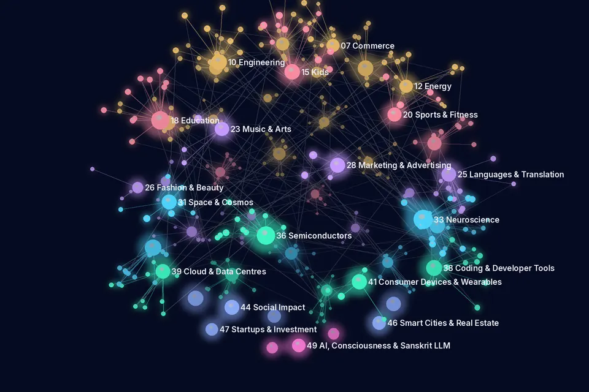

Journal of the AI Universe ✦ Research Papers Today
Research Papers Today
21 November 2026 · 1588 new AI research papers in 50 of the 50 categories · Curated by Dr.P.R.K.Varma
606 peer-reviewed papers and 982 preprints, compiled automatically from arXiv, medRxiv, bioRxiv, PubMed, Crossref, OpenAlex, preprint servers via Crossref (Research Square, Preprints.org, SSRN and others), arxiv_rss, europepmc. Each line gives the title (linked), authors, venue, date, evidence label and identifier. Abstracts and figures are not reproduced: open the paper to read it. A listing is not an endorsement, and preprints have not been peer-reviewed. Health papers are not medical advice.
Research map in 3D
21 November 2026: the top 320 papers in 50 categories as a 3D network. Large points are categories, small points are papers (brighter = peer-reviewed), and faint lines join papers in different categories that share a topic word in their titles. Drag to rotate, pinch or use + and − to zoom, and tap a paper to open the original. Titles and links only.

Papers per category (50 categories)
01–14 Industries & Sectors 509 papers
01 AI Filmmaking
15 papers · 15 preprintsProject page →- CaT-Movie: Balancing Global Planning and Local Rendering for Long Multi-Shot Video GenerationJinpeng Lu, Haoyuan Shi, Yuanshen Guan et al.arXiv (cs.CV) · · Preprint · arXiv:2611.25620 · Open access
- Frequency-Synchronized Boundary Coupling for Training-Free Multi-Prompt Long Video GenerationYipan Xu, Shuyong Gao, Jiyuan Fu et al.arXiv (cs.CV) · · Preprint · arXiv:2611.26098 · Open access
- Introducing ReTiNA-Cinema: Real-Time Neuro-Augmented Cinema via Generative AIAntoine Bellemare-Pepin, Philipp Thölke, Yann Harel et al.arXiv (cs.HC) · · Preprint · arXiv:2611.26469 · Open access
- ContextRenderer: Dynamic-Context Video Generation for Interactive Game WorldsRunze Wang, Fei Zha, Bing He et al.arXiv (cs.CV) · · Preprint · arXiv:2611.25838 · Open access
- ForeSeek: Foresight-Driven Reasoning for Long-Form Video UnderstandingYuchen Sun, Siyuan Cheng, Shi-Zhe Chen et al.arXiv (cs.AI) · · Preprint · arXiv:2611.26024 · Open access
- Online Temporal Rotations for 2 Bit KV-Cache Quantization in Video Diffusion TransformersRyan Lucas, Petros Prastakos, Rahul MazumderarXiv (cs.CV) · · Preprint · arXiv:2611.26334 · Open access
- EvoMem: Self-Evolving Skills for Time-Aware Long Video Memory AgentsYutong Guan, Meixing Shi, Haoran Sun et al.arXiv (cs.CV) · · Preprint · arXiv:2611.25889 · Open access
- FlexVSR: Continuous-Scale Super-Resolution for Streaming Video GenerationJi Wang, Haonan An, Jiasheng Zhang et al.arXiv (cs.CV) · · Preprint · arXiv:2611.26178 · Open access
- VideoRNG: Relightable Neural Gaussians from Generative Video ModelsBowen Xue, Saeed Hadadan, Fabrice Rousselle et al.arXiv (cs.CV) · · Preprint · arXiv:2611.25338 · Open access
- Zero to Four Views: Unified Panorama Generation and Preference RL for Unobserved RegionsRui Hong, Xugang Ye, Jana Košecká et al.arXiv (cs.CV) · · Preprint · arXiv:2611.25389 · Open access
02 AI Agriculture
18 papers · 8 peer-reviewed · 10 preprintsProject page →- Non-destructive classification of root vegetable dimensions and varieties based on electrical impedance tomographyMerchant C, Xu X, Hardman D et al.Computers and Electronics in Agriculture · · Peer-reviewed · DOI 10.1016/j.compag.2026.112670 · Open access
- Integrating multi-sensor and advanced AI models for enhanced crop classification in fragmented agricultural landscapesTesfamariam Engida Mengesha, Lulseged Tamene Desta, Paolo Gamba et al.Environment Development and Sustainability · · Peer-reviewed · DOI 10.1007/s10668-026-08292-3
- An empirical evaluation of image preprocessing techniques for transfer learning-based multicrop classificationSyed Farhan, Mahendra Kumar Gourisaria, Abhijit Roy et al.Discover Artificial Intelligence · · Peer-reviewed · DOI 10.1007/s44163-026-02741-8 · Open access
- IMPLEMENTASI AI FRUIT SCANNER UNTUK KLASIFIKASI KEMATANGAN PISANG MENGGUNAKAN MOBILENETV2Herdianto Hamzah, Mohammad Lutfi, Pradipa Rasendriyantho et al.JURNAL TELISKA · · Peer-reviewed · DOI 10.36257/teliska.v19i3.12717
- Agricultural Ecological–Economic Synergistic Development: Concept, Types, Models, and EffectsTeng W, Li Z, Xu LAgriculture · · Peer-reviewed · DOI 10.3390/agriculture16222562 · Open access
- A Hybrid CNN-Transformer with Window-Based Attention for Vegetation-Soil Semantic Segmentation in Agricultural Vision SystemsEsther Gascó, Clara I. López-González, Eva Besada-Portas et al.Applied Sciences · · Peer-reviewed · DOI 10.3390/app162211486 · Open access
- Reliability and Robustness of Multimodal Deep Learning for Fish Feeding Assessment in Aquaculture: A Critical ReviewShowkat Ahmad Bhat, Ishfaq Bashir Sofi, Nen-Fu HuangAquaculture Journal · · Peer-reviewed · DOI 10.3390/aquacj6040059 · Open access
- SDP-YOLO: An OBB-Based Detector for On-Panicle Rice Grain Counting with Edge–Cloud DeploymentLi F, Xu B, Wang M et al.Agriculture · · Peer-reviewed · DOI 10.3390/agriculture16222558 · Open access
- Crop Yield Analysis and Predictions Using Traditional and Machine Learning ModelsParacha G, Ishfaq BPreprints.org · · Preprint · DOI 10.20944/preprints202611.1918.v1 · Open access
- A Review of Mechanistic and Hybrid Artificial Intelligence Models for Predicting Pesticide Fate and Transport in Soil and WaterR DM, Anchan S, Shetty N et al.Research Square · · Preprint · DOI 10.21203/rs.3.rs-11345910/v1 · Open access
03 AI Defence
1 paper · 1 peer-reviewedProject page →- Belief-fusion heterogeneous multi-agent reinforcement learning for UAV–USV–UUV cooperative searchHanBin Zhang, Wenchuan Zang, Changbin Wang et al.Ocean Engineering · · Peer-reviewed · DOI 10.1016/j.oceaneng.2026.129429
04 AI Healthcare
224 papers · 157 peer-reviewed · 67 preprintsProject page →Research listing only, not medical advice.
- Fully Automated, Explainable AI Analysis of Coronary CTA Improves Prediction of Major Cardiovascular EventsGulsun MA, Singh V, Lira J et al.JACC. Advances · · Peer-reviewed · DOI 10.1016/j.jacadv.2026.103461 · PMID 43057164 · Open access
- Dynamic Risk Assessment of Severe Ventricular Arrhythmia in Patients With Implantable Defibrillators and Reduced Left Ventricular Ejection FractionDiz-Díaz J, Lillo-Castellano JM, La Rosa G et al.Circulation. Arrhythmia and electrophysiology · · Peer-reviewed · DOI 10.1161/circep.125.015093 · PMID 43059580
- Facial photographs reveal mortality risk beyond triage and clinical risk scoresHeckenbach I, Iversen KK, Ben Ezra M et al.Nature Communications · · Peer-reviewed · DOI 10.1038/s41467-026-79581-8 · Open access
- Fine-tuning of polygenic score to local data improves risk prediction and clinical implementationKim MS, Sui Y, Patel AP et al.Nature communications · · Peer-reviewed · DOI 10.1038/s41467-026-77770-z · PMID 43058116
- Epidemiology-informed graph neural networks for predicting and interpreting transmissible hospital-acquired infectionsVindas Y, Bornet A, Abbas M et al.npj Digital Medicine · · Peer-reviewed · DOI 10.1038/s41746-026-03382-y · Open access
- Cloud vs. on-premise large language models for urgent patient-portal message screening: a comparative evaluationMoura Junior V V, Gallani S, Basovic L et al.npj Digital Medicine · · Peer-reviewed · DOI 10.1038/s41746-026-03477-6 · Open access
- Tele-Cranio: a CT-free AI solution for remote diagnosis and planning of craniomaxillofacial deformitiesXu M, Wang Z, Zhang L et al.npj Digital Medicine · · Peer-reviewed · DOI 10.1038/s41746-026-03454-z · Open access
- Postoperative timing effects on AI-based resection-cavity segmentation in glioma: multi-site evaluation and relevance assessmentLudovico Coletta, Alberto Spolverato, Luca Zigiotto et al.npj Precision Oncology · · Peer-reviewed · DOI 10.1038/s41698-026-01786-3 · Open access
- ECDM: Efficient Collaborative Diffusion Model for self-supervised diffusion MRI denoisingChen G, Bai X, Jiang H et al.Medical Image Analysis · · Peer-reviewed · DOI 10.1016/j.media.2026.104397
- Who's Asking? Simulating Role-Based Questions for Conversational AI EvaluationKaur N, Ayad H, Jung H et al.Findings of ACL. ACL · · Peer-reviewed · DOI 10.18653/v1/2026.findings-acl.1769 · PMID 43061674 · Open access
05 AI Finance
23 papers · 8 peer-reviewed · 15 preprintsProject page →Research listing only, not financial advice.
- The role of perceived explainability and fairness in shaping acceptance of AI credit scoring in Vietnam’s P2P lending marketHai Hong Phan, Anh Minh Tu Nguyen, Cuong Quoc NGUYENDiscover Sustainability · · Peer-reviewed · DOI 10.1007/s43621-026-05328-6 · Open access
- Ethical AI in Fintech: Bridging the Gap Between Predictive Performance and Algorithmic Fairness in Fraud DetectionHassan Jaha, Elarbi Abdellaoui AlaouiE3S Web of Conferences · · Peer-reviewed · DOI 10.1051/e3sconf/202675202002 · Open access
- A Comparative Study of Data Leakage Effects in Financial Fraud Detection SystemsEl Gamouz Nourddine, Abdellaoui Alaoui El Arbi, Agoujil SaidE3S Web of Conferences · · Peer-reviewed · DOI 10.1051/e3sconf/202675202004 · Open access
- Internet of Things and Graph Neural Network-Empowered Economic Effect Evaluation and Risk Control Optimization for Green FinanceLuyan XieInternational Journal of e-Collaboration · · Peer-reviewed · DOI 10.4018/ijec.428022 · Open access
- Technological and Organisational Readiness for Artificial Intelligence Adoption and Organisational Innovation in Deposit Money Banks in Yenagoa, Bayelsa State, NigeriaAbite Emmanuel, Oloda Oluwatayo FelixGPH-International Journal of Social Science and Humanities Research · · Peer-reviewed · DOI 10.5281/zenodo.24369195 · Open access
- Machine Learning in Credit Risk Assessment: A Systematic Review of Methods and Model PerformanceSakshi Naidu, Tanisha KotwaniINTERANTIONAL JOURNAL OF SCIENTIFIC RESEARCH IN ENGINEERING AND MANAGEMENT · · Peer-reviewed · DOI 10.5281/zenodo.24361391 · Open access
- Assessing the Impact of Artificial Intelligence on the Quality of Accounting Information and the Efficiency of Organizational DecisionsElaine Sandra Monterroso Achahui, Magaly Pezo ZegarraMinerva · · Peer-reviewed · DOI 10.47460/minerva.v7i21.372 · Open access
- Reassessing Unsupervised Anomaly Augmentation for Fraud Detection: The Roles of Distribution Shift, Learner Instability, and Run-to-Run VariabilityCanan Aslanyürek, Murat AslanyürekApplied Sciences · · Peer-reviewed · DOI 10.3390/app162211473 · Open access
- Digital Banking and Economic Growth in Bangladesh: A Systematic Review of Financial Inclusion and InnovationSarker BK, Sarker DK, Hassan F et al.SSRN · · Preprint · DOI 10.2139/ssrn.7703898 · Open access
- From Research to Regulatory Infrastructure: A Deployment Framework for Auditable AI in Financial RegulationMeng S, Hong Z, Wang SPreprints.org · · Preprint · DOI 10.20944/preprints202611.1902.v1 · Open access
06 AI Law & Investigation
16 papers · 7 peer-reviewed · 9 preprintsProject page →Research listing only, not legal advice.
- Large language models' complicit responses to illicit instructions across socio-legal contextsWang X, Xie H, Wang Y et al.Nature Communications · · Peer-reviewed · DOI 10.1038/s41467-026-79176-3 · Open access
- Machine Learning-Enhanced Vibrational Spectroscopy for Mammalian Wildlife: A Critical Review of Conservation and Forensic ApplicationsMajumder MS, Halámková LEcology and evolution · · Peer-reviewed · DOI 10.1002/ece3.74728 · PMID 43061226 · Open access
- Trade-offs in deploying legal AI: Insights from a public opinion study to guide AI risk managementKimon Kieslich, Sophie Morosoli, Nicholas A. Diakopoulos et al.Data & Policy · · Peer-reviewed · DOI 10.1017/dap.2026.10108 · Open access
- miFBI: A miRNA-based forensic body-fluid identification systemWei A, Zhang X, Yuan P et al.Forensic science international · · Peer-reviewed · DOI 10.1016/j.forsciint.2026.113192 · PMID 43056789
- The Dilemma of Authorship in the Age of Artificial Intelligence: Drawing the Line Between AI-Generated and AI-Assisted Works in Copyright Law from a Sri Lankan PerspectiveMenaka HarankahaInternational Journal of Law Management & Humanities · · Peer-reviewed · DOI 10.63108/ijlmh.13303 · Open access
- Who Benefits from Machine Invention? The Right to Science, Artificial Intelligence and the Indian Patent SystemLaxmi Walia, Namrata YadavInternational Journal of Law Management & Humanities · · Peer-reviewed · DOI 10.63108/ijlmh.13301 · Open access
- AI Legal Assistant for Saudi Commercial LawOmar Alobaid, Saud Alkathery, Abdulaziz Alamri et al.Electronics · · Peer-reviewed · DOI 10.3390/electronics15225404 · Open access
- Predictive Docket Analytics and NLP-Driven Case Triage for Philippine Trial Courts: Mitigating Judicial Backlogs in Resource-Constrained JurisdictionsGrepon BGSSRN · · Preprint · DOI 10.2139/ssrn.7717881 · Open access
- Statutory Silence & Epistemic Noise; Reconstructing Thaler V. Perlmutter Through Bacon's Theory Of ErrorMoldawer MSSRN · · Preprint · DOI 10.2139/ssrn.7721259
- Law at the Speed of AI: Critical Legal Infrastructure for the Machine Age: Autonomy Under Law Architecture (AULA)Natasha E Blycha, James Myint, Chen Feng et al.arXiv (cs.CE) · · Preprint · arXiv:2611.25985 · Open access
07 AI Commerce
7 papers · 2 peer-reviewed · 5 preprintsProject page →- A Selective State-Space Model for Real-Time E-Commerce Transaction Anomaly Detection in Management Information SystemsZiad Hmwd A AlmtiriJournal of theoretical and applied electronic commerce research · · Peer-reviewed · DOI 10.3390/jtaer21110430 · Open access
- Comparative Evaluation of Explanation Reliability in Shipment-Level Supply Chain Risk Classification: A Leakage-Checked Benchmark of XGBoost and a Hybrid XGBoost–Neural Framework with SHAP and LIMESakib Salam Jamee, Ayan Barua, Md Shahidul Islam et al.Information · · Peer-reviewed · DOI 10.3390/info17111181 · Open access
- Dynamic Association Temporal Graph Neural Networks for Multidimensional Management Time Series ForecastingZhao W, Zhang F, Yuan Y et al.Research Square · · Preprint · DOI 10.21203/rs.3.rs-11488464/v1 · Open access
- An Autonomous Multi-agent Architecture for Enterprise Customer SupportAnand A, Nadig S YSSRN · · Preprint · DOI 10.2139/ssrn.7712778
- DNA: Unlocking Depth Scaling in CTR ModelsCaiyuan Li, Wenjie Wu, Yuheng Huang et al.arXiv (cs.IR) · · Preprint · arXiv:2611.25659 · Open access
- Multi-Model Machine Learning for Demand Forecasting and the Reduction of Metal Sheet Consumption in Metalworking SMEsSolorzano Suarez LH, Justino Salinas PC, Alvarado Quintana CAPreprints.org · · Preprint · DOI 10.20944/preprints202611.1920.v1 · Open access
- The Window Lever: Longer Observation Windows Outweigh the Observed Effects of Data, Capacity, and Architecture in Customer Behavior ForecastingTara Sowrirajan, Yanqiao WangarXiv (cs.LG) · · Preprint · arXiv:2611.26521 · Open access
08 AI Journalism
5 papers · 3 peer-reviewed · 2 preprintsProject page →- Discourse-Guided Lateral Reading for Automated News Trustworthiness AssessmentOliwia Majtyka, Ting LiuProceedings of the International Conference on AI Research. · · Peer-reviewed · DOI 10.34190/icair.7.1.5684 · Open access
- FRAMING MEDIA REPRESENTATIONS OF DONALD TRUMP: AN NLP-BASED ANALYSIS OF THE GUARDIAN NEWS COVERAGELarisa Micallef, Sofia Artemyeva, Kirill Temkin et al.Veredas do Direito Direito Ambiental e Desenvolvimento Sustentável · · Peer-reviewed · DOI 10.18623/rvd.v23.19.070 · Open access
- Disenchanting the Epistemic Authority and Inevitability of AI: An Analysis of Factcheckers’ Perspectives and Professional GuidelinesRegina Cazzamatta, Augusto SantosThe International Journal of Press/Politics · · Peer-reviewed · DOI 10.1177/19401612261505242 · Open access
- Generative News Recommendation Reproduces Popularity: A Memorization-Based AnalysisShotaro IshiharaarXiv (cs.IR) · · Preprint · arXiv:2611.25606 · Open access
- Asymmetric rhetorical strategies drive partisanship in television newsUpasana Dutta, Homa Hosseinmardi, Amir Ghasemian et al.arXiv (cs.CY) · · Preprint · arXiv:2611.25140 · Open access
09 AI Architecture
2 papers · 2 preprintsProject page →- A Ranking-Based Human Validation Layer for Concept Implementation in AI-Generative DesignIbáñez-Arnal M, Doménech-Ballester L, García-Peñas VResearch Square · · Preprint · DOI 10.21203/rs.3.rs-11627821/v1 · Open access
- Process-Knowledge-Guided Latent Diffusion for Generative Design of Porous Architectures: A Case Study in Aerosol Jet PrintingNgoc Dang Khoa Nguyen, Hyunwoong KoarXiv (cs.LG) · · Preprint · arXiv:2611.25264 · Open access
10 AI Engineering
23 papers · 9 peer-reviewed · 14 preprintsProject page →- System of agentic AI for the discovery of metal–organic frameworksInizan TJ, Yang S, Kaplan A et al.Nature Computational Science · · Peer-reviewed · DOI 10.1038/s43588-026-01058-x · Open access
- A Prior-Guided Ordinal Graph Convolutional Network for Fault Diagnosis of Rolling Bearings under Unknown Damage SeverityWang Y, Liu B, Yan C et al.IEEE Sensors Journal · · Peer-reviewed · DOI 10.1109/jsen.2026.3754203
- Artificial intelligence-driven design and construction of ultra-high-performance concrete: a comprehensive reviewJun-Run Xia, Hou-Qi Sun, Hui-Zhi Liu et al.Engineering Applications of Artificial Intelligence · · Peer-reviewed · DOI 10.1016/j.engappai.2026.116777 · Open access
- Inverse Design of Polyarylate Nanofiber-Enabled Basalt Scale Nanocomposite Insulating Paper for High Dielectric Reliability via Finite Element-Guided Machine LearningHu Q, Wang J, Gan Q et al.Small (Weinheim an der Bergstrasse, Germany) · · Peer-reviewed · DOI 10.1002/smll.76843 · PMID 43062157
- A novel double-graph joint graph neural network for coupling fault diagnosis with application to the hot rolling mill processKai Zhang, Kaixiang Peng, Yundan Liu et al.Control Engineering Practice · · Peer-reviewed · DOI 10.1016/j.conengprac.2026.107348
- Spectral bias mitigation in physics-informed neural surrogates for nonlinear structural dynamics: Fourier feature encoding versus Kolmogorov–Arnold representationsSalih Berkan AydemirThe Journal of Supercomputing · · Peer-reviewed · DOI 10.1007/s11227-026-08964-x · Open access
- Zero-shot rolling bearing fault diagnosis from vibration measurements using a dual-path channel-attention autoencoder and variable-weight attribute matrices derived from latent Dirichlet allocation (LDA)Wei L, Tan Y, Peng XThe Review of scientific instruments · · Peer-reviewed · DOI 10.1063/5.0341030 · PMID 43062804
- Physics-Informed Neural Networks for Biot's Model via Fixed-Stress Splitting and Energy Natural Gradient DescentKexin Sun, Qiang Liu, Minfu Feng et al.Communications in Computational Physics · · Peer-reviewed · DOI 10.4208/cicp.oa-2026-0037 · Open access
- A Fault Diagnosis Method Based on Graph Convolutional Attention Networks for Complex Coupled SystemsXiaojing Cao, Kaihe You, Xuguang Chai et al.Algorithms · · Peer-reviewed · DOI 10.3390/a19111018 · Open access
- Bayesian Physics-Informed Neural Networks Embedded in Finite Element Analysis: A Probabilistic Digital Twin for Reliability-Based Design of FDM Polymer ComponentsZahmatkeshan MH, Biglari FR, Dariani BMResearch Square · · Preprint · DOI 10.21203/rs.3.rs-11305412/v1 · Open access
11 AI Robotics
113 papers · 19 peer-reviewed · 94 preprintsProject page →- Expert operating skills learning-based intelligent shared control method for a CT-guided percutaneous biopsy robotWang S, Zhang G, Chen W et al.Nature Communications · · Peer-reviewed · DOI 10.1038/s41467-026-79622-2 · Open access
- A Survey of Robotic Navigation and Manipulation with Physics Simulators in the Era of Embodied AILiang Wei Wong, Xueyang Kang, Kaixin Bai et al.ACM Computing Surveys · · Peer-reviewed · DOI 10.1145/3856802 · Open access
- A survey of natural language interaction and environmental perception in intelligent roboticsXiaoqing Shao, 丁 娟 Ding Juan, Pengwei zhang et al.Discover Applied Sciences · · Peer-reviewed · DOI 10.1007/s42452-026-09890-6 · Open access
- COROMER: A Multimodal Transformer for Collaborative Robots’ Skill LearningM. A. Moussa, Eman Ashraf, Mostafa A. ElBahloul et al.International Journal of Computational Intelligence Systems · · Peer-reviewed · DOI 10.1007/s44196-026-01518-2 · Open access
- A Deep Neural Network with Multi-Scale Attention Mechanisms for Small Unmanned Aerial Vehicle Detection in Complex EnvironmentsHao Gan, Qian Jiang, Yunhao Meng et al.Information Systems Frontiers · · Peer-reviewed · DOI 10.1007/s10796-026-10840-1
- A multi-rotor UAV classification and recognition method based on RCSB-NetSiqi Peng, Jing XingScientific Reports · · Peer-reviewed · DOI 10.1038/s41598-026-80874-7 · Open access
- ADMSF-YOLO: structural refinement and prediction-scale reallocation for UAV small-object detectionYu Zhao, Guohui Zhou, Zhijie Zhou et al.Journal of King Saud University - Computer and Information Sciences · · Peer-reviewed · DOI 10.1007/s44443-026-01395-x · Open access
- Deep reinforcement learning-enhanced hybrid algorithm for optimizing unmanned aerial vehicle flight paths using starfish optimization and differential evolutionAbdellatif Cheradid, Farouq Zitouni, Ahmed Korichi et al.Cluster Computing · · Peer-reviewed · DOI 10.1007/s10586-026-06765-8
- Intent and Uncertainty-Aware Deep Reinforcement Learning Approach for Autonomous UAV Navigation in Shared SpacesHu C, Xu W, Sun H et al.Neural Networks · · Peer-reviewed · DOI 10.1016/j.neunet.2026.109937
- Multimodal In-Process Risk Grading for Robot-Assisted Ultrasound-Guided Thyroid Nodule Puncture: A Phantom StudyGuo Y, Wang YMedical engineering & physics · · Peer-reviewed · DOI 10.1088/1873-4030/aec44c · PMID 43056749
12 AI Energy
10 papers · 4 peer-reviewed · 6 preprintsProject page →- Tail reliability of machine-learning probabilistic forecasts in the GB day-ahead electricity marketAgrawal A, O'Sullivan AEnergy and AI · · Peer-reviewed · DOI 10.1016/j.egyai.2026.100975 · Open access
- Combined Effects of Temperature and Airflow on Biochemical Properties and Energy Consumption of Banana Slices During Convective Hot Air Drying: Application of Machine Learning ApproachesEl-Mesery HS, Jibril AN, Mabusela B et al.Food science & nutrition · · Peer-reviewed · DOI 10.1002/fsn3.72375 · PMID 43060662 · Open access
- A hybrid XGBoost-RF residual learning model for energy consumption forecastingNorouzi M, Eyupoglu C, Karakuş OFrontiers in artificial intelligence · · Peer-reviewed · DOI 10.3389/frai.2026.1967344 · PMID 43060497 · Open access
- UAV-Assisted Solar Panel Condition Monitoring Under Domain Shift: Comparative Evaluation of Classical ML, CNN, and Vision Transformer ModelsSinisa Mihajlovic, Dalibor Dobrilović, Aleksandra Stojkov et al.Electronics · · Peer-reviewed · DOI 10.3390/electronics15225401 · Open access
- How to Effectively Manage the Energy in Residential Systems: Development and Comparison of MethodsJulian RuddickarXiv (eess.SY) · · Preprint · arXiv:2611.26412 · Open access
- Should Belgians Install an Advanced Energy Management System in Their Electrified Dwelling ?Julian Ruddick, Cedric De Cauwer, Thierry Coosemans et al.arXiv (eess.SY) · · Preprint · arXiv:2611.26441 · Open access
- Thermal-Guided Ensemble Reinforcement Learning for Regime-Adaptive Short-Term GPU Power Forecasting in AI Data CentersYuanshuo Zhang, Ying Zhang, Ziying Wang et al.arXiv (eess.SY) · · Preprint · arXiv:2611.26527 · Open access
- Data-driven Linearization of Operational Dynamics of Soft Open Points in Power Distribution NetworksShoaib Hussain, Mostafa Farrokhabadi, Hamidreza ZareipourarXiv (eess.SY) · · Preprint · arXiv:2611.25307 · Open access
- Simulation-Guided Optimization of Cigs Heterojunction Solar Cells for Through-Fire Imaging as Calibrated PhotodetectorsKabilan R, Devaraj GP, Muthuraman GResearch Square · · Preprint · DOI 10.21203/rs.3.rs-11550468/v1 · Open access
- Lightweight Low-Frequency Non-Intrusive Load Monitoring via Karhunen-Loève Feature Distillation and Temporal Convolutional NetworksSanka Peeris, Pandula Thennakoon, Praveen Sumanasekara et al.arXiv (eess.SP) · · Preprint · arXiv:2611.25678 · Open access
13 AI Transportation
43 papers · 22 peer-reviewed · 21 preprintsProject page →- Towards safe and comfortable autonomous driving: Risk-aligned smooth reinforcement learning with an adaptively truncated world modelShi Y, Wu J, Song D et al.Transportation Research Part C: Emerging Technologies · · Peer-reviewed · DOI 10.1016/j.trc.2026.106172
- Leveraging CAV forward plans for proactive traffic prediction via LLM-assisted information integrationWu Q, Zeng J, Guo W et al.Advanced Engineering Informatics · · Peer-reviewed · DOI 10.1016/j.aei.2026.105467
- A deep learning-enhanced cryptographic framework for intelligent traffic blocking in secure networksK. Srilatha, Ganesh S. KhekareScientific Reports · · Peer-reviewed · DOI 10.1038/s41598-026-80448-7 · Open access
- A multi-agent reinforcement learning approach for real-time multi-aircraft taxi speed cooperative control in mega airports with complex airside interactions and uncertaintiesBao J, Zhang Z, Kang J et al.Engineering Applications of Artificial Intelligence · · Peer-reviewed · DOI 10.1016/j.engappai.2026.116828
- Integrating distributed lag non-linear models and deep learning reveals meteorological drivers of influenza A and B positivity in a 6-year subtropical surveillance studyXie L, Zhang MJ, Tan JL et al.eLife · · Peer-reviewed · DOI 10.7554/elife.107767 · PMID 43063020
- Causal Reinforcement Learning-Based Decision-Making Method for Cooperative Vehicle-Infrastructure Autonomous Driving in Safety-Critical ScenariosZhiqiang Li, Ruihua Xue, Meng Yuan et al.COTA International Conference of Transportation Professionals (CICTP) · · Peer-reviewed · DOI 10.1061/9780784486948.016
- Safe, efficient, and energy-saving speed control for autonomous driving based on reinforcement learningHe Tang, Meijiao WangProceedings of the Institution of Mechanical Engineers Part D Journal of Automobile Engineering · · Peer-reviewed · DOI 10.1177/09544070261505516
- Diffusion-Based Framework for Safety-Critical Scenario Generation in Autonomous Driving under Map Conditions and Physical ConstraintsYi Wang, Shijie Han, Jiankun Jiao et al.COTA International Conference of Transportation Professionals (CICTP) · · Peer-reviewed · DOI 10.1061/9780784486948.021
- Distributed Physics-Informed Deep Reinforcement Learning Framework for Longitudinal Control of Autonomous VehiclesLiping Tian, Miao Wang, Zihao Mao et al.COTA International Conference of Transportation Professionals (CICTP) · · Peer-reviewed · DOI 10.1061/9780784486948.023
- Lane-Level Traffic Anomaly Recognition Method Based on Transformer-CNN in Microscopic Dynamic Simulation EnvironmentKeqiang Sun, Long Gao, Chen Wang et al.COTA International Conference of Transportation Professionals (CICTP) · · Peer-reviewed · DOI 10.1061/9780784486948.063
14 AI Manufacturing
9 papers · 2 peer-reviewed · 7 preprintsProject page →- CFL-YOLO: A Steel Surface Defect-Detection Algorithm Based on YOLO11 for Civil Engineering ApplicationsYuchen Xie, Danfeng Du, Hang Wang et al.Journal of Materials in Civil Engineering · · Peer-reviewed · DOI 10.1061/jmcee7.mteng-24005
- MPMNet: multi-information perception-enhanced Mamba UNet for surface defect detectionDianlong Chen, 刘腾彬, Zisheng Xu et al.Frontiers in Artificial Intelligence · · Peer-reviewed · DOI 10.3389/frai.2026.1991892 · Open access
- Digitization of Analogue Gauges using Computer VisionErico Kayumba Mutonkole, Olasupo Ajayi, Omowunmi IsafiadearXiv (cs.CV) · · Preprint · arXiv:2611.26262 · Open access
- A Lightweight Hybrid Approach for Milling Force Reconstruction from Internal Machine SignalsEric Hirsch, Christian FriedricharXiv (cs.LG) · · Preprint · arXiv:2611.25921 · Open access
- From Industrial Product Documentation to Automated Digital Product Passport Generation: An Experimental Study of Large Language ModelsMarco Buecheler, Grant Richards, Nathan HartmanarXiv (cs.SE) · · Preprint · arXiv:2611.24998 · Open access
- AI-Native Industrial Control Systems: An Agent Architecture for the Control System LifecycleLisi Liu, Ang Zhou, Chuan Pang et al.arXiv (physics.soc-ph) · · Preprint · arXiv:2611.25411 · Open access
- An LLM-Agentic Framework for Intelligent Work Order Management in Industrial MaintenanceNianjun Zhou, Dhaval PatelarXiv (cs.AI) · · Preprint · arXiv:2611.25070 · Open access
- ThermaMesh: A Modular, Distributed AI Computing Architecture for Industrial Heat Recovery and Sustainable InfrastructureMilelli RSSRN · · Preprint · DOI 10.2139/ssrn.7722658 · Open access
- Tracking Objects Through Assembly and DecompositionCheryl Lam, Yihong Sun, Bharath HariharanarXiv (cs.CV) · · Preprint · arXiv:2611.26269 · Open access
15–20 People & Life Stages 112 papers
15 AI Kids
10 papers · 7 peer-reviewed · 3 preprintsProject page →- From Data to Duty: An Informatics Blueprint for Pediatric Oncology TrialsWyatt KD, Tran AD, Birz S et al.Pediatric blood & cancer · · Peer-reviewed · DOI 10.1002/1545-5017.70816 · PMID 43062204
- Predicting future fever in hospitalized children using longitudinal body temperature data and machine learningJeng-Jung Chen, Jacky Chung‐Hao Wu, Jinn-Moon Yang et al.BMC Medical Informatics and Decision Making · · Peer-reviewed · DOI 10.1186/s12911-026-03963-7 · Open access
- Machine learning prediction of cyclosporine nephrotoxicity in pediatric patients using therapeutic drug monitoring and clinical dataZhou W, Zhang Q, Shi J et al.Expert opinion on drug metabolism & toxicology · · Peer-reviewed · DOI 10.1080/17425255.2026.2767120 · PMID 43059353
- Detection of Duchenne muscular dystrophy in children using Kinect-based motion analysis and graph convolutional networks: a pilot studyZeinab Famili, Hadi Soltanizadeh, Bita Shalbafan et al.Mathematics in Medical and Life Sciences · · Peer-reviewed · DOI 10.1080/29937574.2026.2759379 · Open access
- Research on gait recognition method of children based on deep learningXuejing Du, Yunfei Qu, Xing Li et al.Cluster Computing · · Peer-reviewed · DOI 10.1007/s10586-026-06764-9
- MVCNN model for pediatric obstructive sleep apnea prediction via facial photosWu X, Zhang X, Li Y et al.Frontiers in dental medicine · · Peer-reviewed · DOI 10.3389/fdmed.2026.1969587 · PMID 43054232 · Open access
- Evaluating readability of AI-generated pediatric dental education materialsXiong M, Xiong M, Xiong Y et al.Frontiers in digital health · · Peer-reviewed · DOI 10.3389/fdgth.2026.1949196 · PMID 43061215 · Open access
- AI, Anime, Dolls, and Stories: A Systematic Review into the Role of Fantasy Sexual Materials in Child Sexual Exploitation Escalation CrossoverAhmad N, Kelty S, Kavanagh PS et al.PsyArXiv · · Preprint · DOI 10.31234/osf.io/p6rc9 · Open access
- Identifying Youth Somatic Symptom Risk Through Interpretable Machine Learning and Behavioral Phenotyping: A Temporal Validation StudySui Y, Zhou L, Li YResearch Square · · Preprint · DOI 10.21203/rs.3.rs-11603867/v2 · Open access
- Time Series Structure Learning with Local Causal Parent DiscoveryJacqueline Maasch, Shu Wan, Hank Zhu et al.arXiv (cs.LG) · · Preprint · arXiv:2611.26232 · Open access
16 AI Geriatric
12 papers · 5 peer-reviewed · 7 preprintsProject page →- The Challenges and Opportunities of Artificial Intelligence for Supporting Health Behavior Change in Older Adults: A Research Centers Collaborative Network Workshop ReportFanning J, Brinkley TE, Choudhry NK et al.The Gerontologist · · Peer-reviewed · DOI 10.1093/geront/gnag259 · PMID 43058984 · Open access
- AI-Based Monitoring Devices for the Identification of Circadian Parameters as Digital Predictive Biomarkers of Neurodegenerative Diseases in Older Adults: Systematic ReviewHerrera-Zamora JM, Monroy-Rodriguez J, Garcia-Mancilla J et al.JMIR aging · · Peer-reviewed · DOI 10.2196/83031 · PMID 43063473
- Socioeconomic status and incident osteoporosis risk in older adults: a longitudinal analysis of the English longitudinal study of ageing and the health and retirement studyHuang M, Wang Q, Chen Y et al.Frontiers in endocrinology · · Peer-reviewed · DOI 10.3389/fendo.2026.1831069 · PMID 43060851 · Open access
- Development and validation of machine learning models to predict mortality in elderly patients with chronic critical illness: a multi-cohort study using MIMIC, eICU, and a Chinese datasetXing Chen, Chao Lei, Chong Li et al.Frontiers in Medicine · · Peer-reviewed · DOI 10.3389/fmed.2026.1889261 · Open access
- Probability-Level CNN Fusion for Four-Class Alzheimer MRI ClassificationSubash Luitel, Ji‐In Kim, Jun-Hyung Kim et al.Sensors · · Peer-reviewed · DOI 10.3390/s26227308 · Open access
- Structured Medication Review and Deprescribing Across Healthcare Settings: A Narrative Review of Implementation Drivers and AI-Driven HorizonsDe Luigi E, Armando LG, Miglio G et al.Preprints.org · · Preprint · DOI 10.20944/preprints202611.1910.v1 · Open access
- DeepQuest: From Knowledge Gaps to Scientific Discovery in Alzheimer's DiseaseChunbo Jiang, Yifei Chen, Beining Wu et al.arXiv (cs.AI) · · Preprint · arXiv:2611.26343 · Open access
- AI-enabled whole-of-home resident profiling and connection matching in residential aged care: a conceptual framework and simulation studyUba EJ, Uba HDResearch Square · · Preprint · DOI 10.21203/rs.3.rs-11440401/v1 · Open access
- Frailty-aware extreme gradient boosting for high-dimensional clustered time-to-event outcomesAjibade SK, Olaniran OR, Aderoju SA et al.Research Square · · Preprint · DOI 10.21203/rs.3.rs-11789696/v1 · Open access
- Large Language Model-Enhanced Electronic Frailty Assessment and Prognostic Performance in Hospitalized Adults: A Retrospective Cohort StudyDalal AK, Lundstedt J, Ernecoff NC et al.medRxiv : the preprint server for health sciences · · Preprint · DOI 10.64898/2026.11.04.26367272 · PMID 43060726 · Open access
17 AI Psychology
30 papers · 19 peer-reviewed · 11 preprintsProject page →Research listing only, not medical advice.
- Schizophrenia risk prediction following antecedent psychosis using deep learningAparajita Kashyap, Noémie Elhadad, COPPER Working Group et al.Schizophrenia · · Peer-reviewed · DOI 10.1038/s41537-026-00828-w · Open access
- Using machine learning to predict suicide risk among veterans: variation by race and ethnicityDavis JP, Pedersen ER, Castro CA et al.Epidemiology and psychiatric sciences · · Peer-reviewed · DOI 10.1017/s2045796026101176 · PMID 43059323
- Multitask-State EEG Machine Learning for Depressive and Anxiety Symptom Screening with Benchmark-Based Channel ReductionHu L, Li Q, Wang C et al.IEEE Sensors Journal · · Peer-reviewed · DOI 10.1109/jsen.2026.3753858
- Demoralization syndrome in hemodialysis patients: Development and validation of an interpretable machine learning prediction modelWang H, Zhang P, Liu R et al.Journal of affective disorders · · Peer-reviewed · DOI 10.1016/j.jad.2026.122759 · PMID 43057534
- Multiple wearable digital biomarkers for AI-based diagnosis of major depressive disorder defined by self-reported and clinician-rated scalesSeon Min Lee, Seung-Gul Kang, Seon Heui Lee et al.Scientific Reports · · Peer-reviewed · DOI 10.1038/s41598-026-80489-y · Open access
- Prediction of a task-specific AI-reliance choice from facial expression and galvanic skin response signalsShamszare H, Choudhury APloS one · · Peer-reviewed · DOI 10.1371/journal.pone.0363436 · PMID 43063195
- Mathematical modeling and optimization dynamics of DenseNet-169 using grey wolf optimization for early detection of autism spectrum disorderEdeh Michael Onyema, Edeh Michael Onyema, Mercy Eberechi Benson-Emenike et al.Discover Artificial Intelligence · · Peer-reviewed · DOI 10.1007/s44163-026-02790-z · Open access
- Term Frequency-Inverse Document Frequency (TF-IDF)-Based Machine Learning and a Zero-Shot Fine-Tuned Language Net-Text-to-Text Transfer Transformer (FLAN-T5) Baseline for Depression Risk Detection from TextParveen Kumari, Alpana JijjaCureus Journal of Computer Science. · · Peer-reviewed · DOI 10.7759/s44389-026-00378-3 · Open access
- Retrospective analysis of nursing interventions using artificial intelligence multimodal emotion recognition for perioperative depression in head and neck tumorsYan-Fang Zhu, Xiao-Lin Xuan, Yi-Qi LiWorld Journal of Psychiatry · · Peer-reviewed · DOI 10.5498/wjp.122781 · Open access
- Explainable Machine Learning for Multi-Class Mental Stress Level Prediction: A Comparative Analysis of Ensemble and Conventional ModelsGourab Barui, Rajat Kumar Arya, Harjot Singh et al.International Journal of Modern Science and Research Technology · · Peer-reviewed · DOI 10.67317/ijmsrt26nov056 · Open access
18 AI Education
50 papers · 29 peer-reviewed · 21 preprintsProject page →- How Teachers Judge Creativity in Generative AI-Assisted Student Work: A Cross-Cultural Pathway Model for Higher Education AssessmentZhang L, Liang G, Yuan Y et al.Computers and Education: Artificial Intelligence · · Peer-reviewed · DOI 10.1016/j.caeai.2026.100694 · Open access
- AI literacy in translation education: a qualitative evidence synthesis of critical translation judgement, pedagogy, assessment, and ethicsQing Zheng, Mansour AminiCogent Education · · Peer-reviewed · DOI 10.1080/2331186x.2026.2761757 · Open access
- Self-reported artificial intelligence familiarity, use, and attitudes among students, faculty, and staff at a medical college in the United Arab Emirates: a cross-sectional surveyNadirah Ghenimi, Romona Devi Govender, Falah Mohammed AlMarzooqi et al.BMC Medical Education · · Peer-reviewed · DOI 10.1186/s12909-026-10921-4 · Open access
- Generative artificial intelligence (GenAI) governance and organisational justice in under-resourced higher education contextsShkumbin Leka, Isa Spahiu, Yalalem Assefa et al.Discover Education · · Peer-reviewed · DOI 10.1007/s44217-026-02443-4 · Open access
- Artificial intelligence in nursing education: A bibliometric and visualized analysis of screened literature (2022-2026)Meng F, Zhu Y, Wang Y et al.Nurse education in practice · · Peer-reviewed · DOI 10.1016/j.nepr.2026.105028 · PMID 43056769
- Cognitive and attitudinal correlates of trust in AI-generated content among university students in TürkiyeMurat Aytaş, Mehmet Kucuktongur, Cengiz Apaydın et al.Scientific Reports · · Peer-reviewed · DOI 10.1038/s41598-026-78416-2 · Open access
- Artificial Intelligence in Fellowship Leadership: Practical Applications for Recruitment, Education, and Program ManagementMena Lora AJ, Knodle R, Cohen-Yatziv L et al.Open forum infectious diseases · · Peer-reviewed · DOI 10.1093/ofid/ofag738 · PMID 43061070 · Open access
- Listening to the future: pharmacy student and preceptor perspectives on ambient AI documentation in an ambulatory care APPE rotationLin KP, Koo J, Lerma H et al.Currents in pharmacy teaching & learning · · Peer-reviewed · DOI 10.1016/j.cptl.2026.102851 · PMID 43056915
- Intelligent Learning Systems: The Role of Artificial Intelligence in Transforming EducationHumera NafeesInternational Research Journal on Advanced Engineering Hub (IRJAEH) · · Peer-reviewed · DOI 10.47392/irjaeh.2026.0749 · Open access
- Nka’ayemba IA: An AI-Based Intelligent Tutoring System with Syllable-Tone Fusion ASR for Personalized Learning of Cameroonian Tonal LanguagesHilbert Boris Mbiamy Nakmeni, Eric Desire Kameni, Michel Calvin MougaE3S Web of Conferences · · Peer-reviewed · DOI 10.1051/e3sconf/202675202003 · Open access
19 AI Work & Employment
6 papers · 1 peer-reviewed · 5 preprintsProject page →- How artificial intelligence shapes employer branding: a systematic review of perceptions and paradoxesRita Bendaravičienė, Lina PilelienėPersonnel Review · · Peer-reviewed · DOI 10.1108/pr-04-2026-0716
- AI-Driven Transformation of Digital Platform Work: A Task-Based Model for Measuring Labour Disruption and Vulnerability, with Early Evidence from Online Freelancing in KenyaFarhan LatifarXiv (cs.CY) · · Preprint · arXiv:2611.25585 · Open access
- Generative AI and Early-Career Hiring: Counts, Entry Rates, and the Employment BaseWu YResearch Square · · Preprint · DOI 10.21203/rs.3.rs-11342200/v2 · Open access
- HireWatch: Evaluating LLM Compliance with U.S. Employment Law Under Contextual PressureHuy Nghiem, Maria Kostylew, Noam KoltarXiv (cs.CL) · · Preprint · arXiv:2611.24970 · Open access
- Artificial Intelligence in Career Guidance and Talent Matching: A Structured Methodological Review of Models, Labels and Trustworthy EvaluationNegm A, Sherif H, Farouk MResearch Square · · Preprint · DOI 10.21203/rs.3.rs-11650619/v1 · Open access
- Reliance on Generative AI Tools (ChatGPT, Claude and Equivalents) for Study, Work and Decision-Making: A Narrative Review of Evidence (2022-2026), Research Gaps, and the Under-Studied Indian ContextMansoori WASSRN · · Preprint · DOI 10.2139/ssrn.7722660 · Open access
20 AI Sports & Fitness
4 papers · 3 peer-reviewed · 1 preprintProject page →- Artificial intelligence-based cyber-resilient architecture of wearable fitness and sports performance monitoring under adversarial sensor attacksFei Bi, Li LiuScientific Reports · · Peer-reviewed · DOI 10.1038/s41598-026-81293-4 · Open access
- A state space model for long-sequence modeling and outcome prediction of heterogeneous event data with application to sports analyticsYanan Meng, 魏如松, Xiaoqin ZhangJournal of King Saud University - Computer and Information Sciences · · Peer-reviewed · DOI 10.1007/s44443-026-01436-5 · Open access
- Exploratory development and internal validation of leakage-resistant, imbalance-aware machine-learning models for incident tendinopathy in athletesAhmed Saber Elgebaly, Duncan Muir, Rawad Hammad et al.Frontiers in Medicine · · Peer-reviewed · DOI 10.3389/fmed.2026.1918715 · Open access
- <i><b>Mens-Corpus-Sana</b></i> Making an Exercise App with Two Frontier LLM Systems: A Case Study for the Non-Programmer Houze WCSSRN · · Preprint · DOI 10.2139/ssrn.7720198
21–29 Culture & Belief 55 papers
21 AI Spirituality
3 papers · 1 peer-reviewed · 2 preprintsProject page →- The mindful AI use scale (MAIS): development and initial cross-country structural evidence grounded in mindfulness theoryÖmer Aslan, İbrahim Arpacı, Fettah KiranCurrent Psychology · · Peer-reviewed · DOI 10.1007/s12144-026-10347-7
- Retrieving Patristic References and Modelling Topics in Bullinger's Reformation CorrespondenceLena Pickartz, Philipp Schaer, Phillip B. StröbelarXiv (cs.IR) · · Preprint · arXiv:2611.25247 · Open access
- GenAI-DBT: Evaluating a DBT-Informed Generative AI Platform for Mindfulness Skills Training: A Pilot Randomized StudyJingchen Ye, Yujia Chen, Leyang Han et al.arXiv (cs.HC) · · Preprint · arXiv:2611.25428 · Open access
22 AI Mythology
4 papers · 2 peer-reviewed · 2 preprintsProject page →- Bridging the past: a comprehensive survey on the recognition of Japanese historical documentsAnh Duc Le, Hieu Duc Thai Tran, Anh Trac Duc Dinh et al.International Journal on Digital Libraries · · Peer-reviewed · DOI 10.1007/s00799-026-00456-w · Open access
- Research on ancient text entity extraction based on domain-specific large language modelsWenhua Zhao, Zhixiao Zhao, W. Ye et al.Digital Scholarship in the Humanities · · Peer-reviewed · DOI 10.1093/llc/fqag127
- The Trickster Pattern: A Cross-Disciplinary Synthesis on Deception and Manipulation in AI SystemsDeVadoss JSSRN · · Preprint · DOI 10.2139/ssrn.7717060 · Open access
- Seeing Through Glass: A Rapid Scoping Review of 3D Documentation of Transparent and Reflective Surfaces in Cultural Heritage, from Photogrammetry to Gaussian SplattingKonstantakis M, Iakovaki E, Gkavogiannis N et al.Preprints.org · · Preprint · DOI 10.20944/preprints202611.1789.v1 · Open access
23 AI Music & Arts
3 papers · 1 peer-reviewed · 2 preprintsProject page →- Improved Single-Stage Pavement Distress Detection Model with a Gallery-Prompting DetectorHui Wang, Shuilan Pang, Zijie Lin et al.COTA International Conference of Transportation Professionals (CICTP) · · Peer-reviewed · DOI 10.1061/9780784486948.260
- Sample-efficient end-to-end Optical Music Recognition through Active LearningEric Ayllon, Francisco J. Castellanos, Antonio Rios-VilaarXiv (cs.CV) · · Preprint · arXiv:2611.25975 · Open access
- The landscape of AI speech generation and deepfake detectionSimon KingarXiv (cs.SD) · · Preprint · arXiv:2611.24993 · Open access
24 AI Literature
5 papers · 5 peer-reviewedProject page →- Can AI Express Sentiment Like Humans in Research Abstracts? Implications for Academic PublishingWei Y, Yao MLearned Publishing · · Peer-reviewed · DOI 10.1002/leap.2126 · Open access
- The Transformation of Creative Workflows Through Generative AI StorytellingMuhammad Nadzmi Abdullah SaniJournal of Art Design and Creative Media · · Peer-reviewed · DOI 10.37134/jadcm.vol1.2.7.2026
- Human authorship in artificial intelligence-assisted research: A counterfactual boundary testHéctor Raúl Zacarías VenturaResearch Ethics · · Peer-reviewed · DOI 10.1177/17470161261505138 · Open access
- Book review: Human–AI interaction and collaborationYuelin LiAslib Journal of Information Management · · Peer-reviewed · DOI 10.1108/ajim-08-2026-997 · Open access
- Analytical Models for Narrative and Sentiment Change Surrounding ASD ClaimsLotfi Wahbeh, Clara Maathuis, Sylvia StuurmanProceedings of the International Conference on AI Research. · · Peer-reviewed · DOI 10.34190/icair.7.1.5400 · Open access
25 AI Languages & Translation
17 papers · 8 peer-reviewed · 9 preprintsProject page →- Deep Learning-Based Sign Language Translation: A Survey and TaxonomyDesen Yuan, Ruili WangACM Computing Surveys · · Peer-reviewed · DOI 10.1145/3844609 · Open access
- Algorithmic bias in gender terms: A comparative study of “wanita” vs “perempuan” in AI translation outputsYumasdaleni, Kustini Kosasih, Siti Atieqoh et al.Asian Journal of Women s Studies · · Peer-reviewed · DOI 10.1080/12259276.2026.2764793
- A Preview of Computational Animal LinguisticsTuan Minh Dang, Atrey Desai, Hridayesh Lekhak et al.ACM Computing Surveys · · Peer-reviewed · DOI 10.1145/3850160 · Open access
- Cross-Lingual Evaluation of Diagnostic Accuracy Across Patient Sex in LLMsHajer Janabi, Anum Khan, Chaturya Pasupuleti et al.Proceedings of the International Conference on AI Research. · · Peer-reviewed · DOI 10.34190/icair.7.1.5594 · Open access
- Multilingual Emotion Profiling of Large Language Models Through Literary Texts and Persona ConditioningNaruki Shirahama, Yuma Yoshimoto, Naofumi Nakaya et al.Journal of Advanced Computational Intelligence and Intelligent Informatics · · Peer-reviewed · DOI 10.20965/jaciii.2026.p1866 · Open access
- Real-Time Indonesian Sign Language Recognition Using Convolutional Neural Networks and MediaPipe FrameworkDimas Nugroho, Putri MaharaniJournal of Information Technology computer science and Electrical Engineering · · Peer-reviewed · DOI 10.61306/4me6nh98 · Open access
- AtlasBERT: a modernized encoder for Turkish general and clinical language inferenceÍskender Ülgen Oğul, Fatih Soygazi, Belgin Ergenç BostanoğluPeerJ Computer Science · · Peer-reviewed · DOI 10.7717/peerj-cs.4173 · Open access
- Vertical Domain Large Language Models: Applications, Challenges, Future ProspectsYanling Chen, Wujun Wang, Jiyang Peng et al.Journal of Advanced Computational Intelligence and Intelligent Informatics · · Peer-reviewed · DOI 10.20965/jaciii.2026.p1799 · Open access
- TRAC: Efficient Diffusion Language Models for Machine Translation via Length-Aware DecodingTianyuan Li, Xihan Yang, Chenglong Wang et al.arXiv (cs.CL) · · Preprint · arXiv:2611.25643 · Open access
- Hybrid Retrieval for Government Scheme Search in English and MarathiAishwarya Gunjal, Kanchan Khemnar, Pawan Poojary et al.arXiv (cs.LG) · · Preprint · arXiv:2611.26514 · Open access
26 AI Fashion & Beauty
2 papers · 2 preprintsProject page →- Multi-View Transformer with Geometry-Guided Multi-Modal ControlNet for 3D Virtual Try-OnSarthak Batra, Armin Mustafa, Adrian HiltonarXiv (cs.CV) · · Preprint · arXiv:2611.25979 · Open access
- Identity World Model: Recognizing People in an Imagined Latent WorldDingqiang Ye, Kartik Narayan, Vishal M. PatelarXiv (cs.CV) · · Preprint · arXiv:2611.25204 · Open access
27 AI Travel & Hospitality
5 papers · 2 peer-reviewed · 3 preprintsProject page →- Navigating digital paradoxes in hospitality: How AI-enabled engagement and techno-invasion shape employee creativityDinh VHInternational Journal of Hospitality Management · · Peer-reviewed · DOI 10.1016/j.ijhm.2026.104977
- Work vs. play: Linking generative AI use to hospitality employees’ innovative behavior via intrinsic motivationXie P, Wei Y, Ma LInternational Journal of Hospitality Management · · Peer-reviewed · DOI 10.1016/j.ijhm.2026.104968
- LM-based Personalized Travel PlannerAmandi Nimasha, Oshadha Wijerathne, Dushan Fernando et al.arXiv (cs.AI) · · Preprint · arXiv:2611.25531 · Open access
- Web search in Latin America: language models use less local and diverse news than search enginesFrancisco W. Kerche, Franziska Sofia Hafner, Felix M. Simon et al.arXiv (cs.CL) · · Preprint · arXiv:2611.25955 · Open access
- Blind Spots Travel, Knowledge Stays Home: What RL Inherits from an LLM JudgeLiang Yue, Eric A. VancearXiv (cs.CL) · · Preprint · arXiv:2611.25191 · Open access
28 AI Marketing & Advertising
3 papers · 2 peer-reviewed · 1 preprintProject page →- Implicit Algorithm Aversion: How Consumer Characteristics Shape Perceptions of Ads Designed by Undisclosed AI Versus Human Advertising ProfessionalsFrank B, Hu Y, Tanaka TJournal of Advertising · · Peer-reviewed · DOI 10.1080/00913367.2026.2741824 · Open access
- Artificial intelligence in international marketing: a systematic review and integrative frameworkJosé Ramón Saura, Sascha Kraus, Hanna Schramm‐KleinInternational Marketing Review · · Peer-reviewed · DOI 10.1108/imr-01-2026-0005
- GEOHunter: Mapping a Generative Engine Optimization Network in the WildSean Tang, Peiran Wang, Ying Li et al.arXiv (cs.CR) · · Preprint · arXiv:2611.26564 · Open access
29 AI Gaming & Immersive Worlds
13 papers · 3 peer-reviewed · 10 preprintsProject page →- How does social media reshape virtual acculturation? A game-mediated framework for cross-cultural adaptationZhang Q, Wen KH, Shao Y et al.PloS one · · Peer-reviewed · DOI 10.1371/journal.pone.0344078 · PMID 43063147
- Reinforcement Learning and Spatial Design Enhance Cooperation in Three-Strategy Evolutionary GameAkter N, Sultana N, Islam R et al.Bio Systems · · Peer-reviewed · DOI 10.1016/j.biosystems.2026.106016 · PMID 43057456
- Virtual Reality for Patient Care: A State-of-the-Art Review of Clinical Applications Based on AI-Assisted Literature RetrievalMaría Asunción Vicente, Daniel García-Torres, César FernándezHealthcare · · Peer-reviewed · DOI 10.3390/healthcare14223971 · Open access
- Augmented Reality and Virtual Reality in Thoracic Surgery: Current Applications and Objective Assessment of Surgical Competency—A Systematic ReviewIchiba H, Ito M, Gregor A et al.Preprints.org · · Preprint · DOI 10.20944/preprints202611.1944.v1 · Open access
- Streaming-AAA: Streaming AAA Game Video Generation at High Resolution, High Frame Rate, and Low LatencyZhihao Hu, Jianqi Ma, Jun Zhang et al.arXiv (cs.CV) · · Preprint · arXiv:2611.26040 · Open access
- PlayCraft: Designing Engaging Games from Agent Play ExperienceWeihao ChengarXiv (cs.AI) · · Preprint · arXiv:2611.26624 · Open access
- Safe Subgame Resolving in Multiplayer GamesBoning Li, Longbo HuangarXiv (cs.GT) · · Preprint · arXiv:2611.25981 · Open access
- VR-SparseQuant: Accurate FP4 Quantization with 2:4 Sparsity on Vera RubinSamir Khaki, Wei-Chen Wang, Song Han et al.arXiv (cs.CL) · · Preprint · arXiv:2611.25717 · Open access
- Recurrent Vision Language Models Solve the Shell GameDingqiang Ye, Jiacong Xu, Wen Zhang et al.arXiv (cs.CV) · · Preprint · arXiv:2611.25210 · Open access
- ScaleWorld: High-Resolution World Generation through Shared Prediction and RefinementYansong Qu, Wesker Zheng, Quanjian Song et al.arXiv (cs.CV) · · Preprint · arXiv:2611.26615 · Open access
30–35 Science 437 papers
30 AI Research & Innovation
236 papers · 56 peer-reviewed · 180 preprintsProject page →- Depth Pro 2: Sharp and Temporally Consistent Metric Monocular DepthPeiyun Hu, Marko Mihajlovic, Lyndon Duong et al.arXiv (cs.CV) · · Preprint · arXiv:2611.26603 · Open access
- TAP: Tapping the Discriminative Potential of Frozen Representations for Class-Incremental LearningZihao Wang, Yu-Wei Zhan, Xiao-Qian Liu et al.arXiv (cs.CV) · · Preprint · arXiv:2611.25478 · Open access
- An edge-preserving dehazing algorithm based on multiscale fusion and depth estimationYue Qin, Chao Liu, Jingsong ZhangDiscover Computing · · Peer-reviewed · DOI 10.1007/s10791-026-10831-5 · Open access
- CogD-ML: Cognitive determinants of social commerce purchase intention in Bangladesh using machine learning and explainable AIBarua S, Rahman R, Azad AKA et al.PloS one · · Peer-reviewed · DOI 10.1371/journal.pone.0362973 · PMID 43063205
- A critical analysis of semantic attribute leakage in compositional text-to-image generationYogesh Kakde, Sandeep Kumar Dash, Ranjita DasScientific Reports · · Peer-reviewed · DOI 10.1038/s41598-026-79004-0 · Open access
- Enhanced underwater vision: a refined Faster R-CNN approach for object detectionXiantao Jiang, Tao Yin, Jin Liu et al.Journal on Image and Video Processing · · Peer-reviewed · DOI 10.1186/s13640-026-00711-9 · Open access
- A decision support system for outdoor thermal comfort assessment based upon an R Shiny Machine Learning frameworkJosé-Antonio Rodríguez-Gallego, Noelia Hernández Barba, Eduardo Diz-Mellado et al.Engineering Applications of Artificial Intelligence · · Peer-reviewed · DOI 10.1016/j.engappai.2026.116766 · Open access
- Variable-step simulated bifurcation via Reinforcement Learning for combinatorial optimizationChen-Rui Fan, Bo Lü, Chuan WangChaos Solitons & Fractals · · Peer-reviewed · DOI 10.1016/j.chaos.2026.119509
- Local Background Features Matter in Out-of-Distribution DetectionYe J, Sun Z, Qiu Y et al.Neural computation · · Peer-reviewed · DOI 10.1162/neco.a.1601 · PMID 43057304
- A hybrid visual state-space model with progressive depth modulation for single image dehazingZhiwen Xie, Haili ZhaoScientific Reports · · Peer-reviewed · DOI 10.1038/s41598-026-78372-x · Open access
31 AI Space & Cosmos
7 papers · 3 peer-reviewed · 4 preprintsProject page →- Claude, find me a planet: amateur astronomers are using AI with mixed resultsGlickman KNature · · Peer-reviewed · DOI 10.1038/d41586-026-03790-w
- Alignment Beyond Language: Risk-Aware Satellite Video Tracking With a Prompt-Conditioned Foundation ModelWang Y, Chang L, Du BIEEE Transactions on Dependable and Secure Computing · · Peer-reviewed · DOI 10.1109/tdsc.2026.3756057
- Euclid: Quick Data Release (Q1) -- Exploring the detailed visual morphology of galaxies in clustersMas-Buitrago P, Kruk S, O'Ryan D et al.Astronomy & Astrophysics · · Peer-reviewed · DOI 10.1051/0004-6361/202662986
- SlotFlow-GB: A Neural Framework for Trans-Dimensional Inference of Overlapping Galactic BinariesNiklas Houba, Giovanni Giarda, Davide PirasarXiv (astro-ph.IM) · · Preprint · arXiv:2611.26057 · Open access
- EuclidFM: Foundation Model for Compact Photometric Survey RepresentationReyhaneh Vojoudi Salmani, Mahsa Berahman, Saeed Ansarifard et al.arXiv (astro-ph.IM) · · Preprint · arXiv:2611.25080 · Open access
- Biocybernetics of the Observer and Infodynamics of Mind: Model Reference Control, Entropic Efficiency Limits from Living Cells to AI, and Cosmological Capacity BoundsStrunkin HSSRN · · Preprint · DOI 10.2139/ssrn.7720739 · Open access
- Improving On-board Shape Models Using Sun Sensors and Implicit RepresentationsZacharia A. Rudge, Giacomo Acciarini, Dario Izzo et al.arXiv (astro-ph.IM) · · Preprint · arXiv:2611.24976 · Open access
32 AI Biotechnology
74 papers · 36 peer-reviewed · 38 preprintsProject page →- VHSeek: biology foundation model-based virus representations revealing virus host associationsLiu W, Wang Y, Fuhrman JA et al.Nature Communications · · Peer-reviewed · DOI 10.1038/s41467-026-79392-x · Open access
- Virtual spatial transcriptomics links kidney histopathology to disease-associated molecular programsNonchev K, Jang Y, Nlandu Khodo S et al.medRxiv (Nephrology) · · Preprint · DOI 10.64898/2026.11.17.26368273 · Open access
- scPACE: A Personalized Autoencoder for Cell Evolution in Single-Cell TranscriptomicsBao J, Lai H-Y, Cuoco M S et al.bioRxiv (Bioinformatics) · · Preprint · DOI 10.64898/2026.11.19.767173 · Open access
- Physics-Guided Neural Reconstruction of Cellular Membranes for 3D Electron MicroscopyMatsuda A, Kim S M, Akamatsu M et al.bioRxiv (Cell Biology) · · Preprint · DOI 10.64898/2026.08.01.742159 · Open access
- Multiscale Topological Transcriptomic Analysis for Alzheimer’s Disease Drug RepurposingWang G, Wang Z, Wei X et al.Journal of Chemical Information and Modeling · · Peer-reviewed · DOI 10.1021/acs.jcim.6c03396 · Open access
- Integrated single-cell transcriptomics and machine learning identify macrophage RPS26 as a potential biomarker for atrial fibrillationYang L, Sun Y, Qiang H et al.Pathology, research and practice · · Peer-reviewed · DOI 10.1016/j.prp.2026.156743 · PMID 43056799
- Integrative network toxicology and genetic association analyses prioritize FASN as a potential molecular link between cigarette smoke exposure and male infertilityDai Z, Wang L, Wang S et al.Naunyn-Schmiedeberg's archives of pharmacology · · Peer-reviewed · DOI 10.1007/s00210-026-06123-w · PMID 43062480
- FusionGDB 3.0: integrating breakpoints, generating personalized sequences, and inferring tumorigenic scenarios for human fusion genesKim P, Yang Z, Kim J et al.Nucleic acids research · · Peer-reviewed · DOI 10.1093/nar/gkag1214 · PMID 43059400 · Open access
- canSAR 2026-an update to the public drug discovery knowledgebaseOrouji S, Chitsazi R, Maxwell DS et al.Nucleic acids research · · Peer-reviewed · DOI 10.1093/nar/gkag1144 · PMID 43059368
- Integrated transcriptomic and machine learning analysis identifies a multi-gene prognostic signature for risk stratification in adrenocortical carcinomaMarabathula RB, Nandini MA, Nakka S et al.Computational biology and chemistry · · Peer-reviewed · DOI 10.1016/j.compbiolchem.2026.109578 · PMID 43056941
33 AI Neuroscience
43 papers · 15 peer-reviewed · 28 preprintsProject page →- Scalable electron tomography for connectomicsKuan AT, Phan S, Delgado KM et al.Nature methods · · Peer-reviewed · DOI 10.1038/s41592-026-03345-x · PMID 43058206
- Harmonizing resting-state functional MRI data to increase sample size and to classify tinnitus brain connectivityAjmera S, Husain F TbioRxiv (Neuroscience) · · Preprint · DOI 10.64898/2026.11.19.767894 · Open access
- Oscillatory Phase Coding Emerges in Adaptive RNNS for Flexible Working MemoryLu K, Chu T, TUERHONG A et al.bioRxiv (Neuroscience) · · Preprint · DOI 10.64898/2026.11.02.763841 · Open access
- Self-Supervised Delta2Gamma Multi-Band EEG Representation Learning for Dementia ClassificationPark C, Choi I, Kim CIEEE Journal of Biomedical and Health Informatics · · Peer-reviewed · DOI 10.1109/jbhi.2026.3756002 · Open access
- Machine Learning and Multimodal Data Fusion for Neurological Prognostication after Cardiac Arrest: A Comprehensive Review of Computational MethodsChenlong Zhang, Ruifang Cui, Xiaopeng Liu et al.International Journal of Computational Intelligence Systems · · Peer-reviewed · DOI 10.1007/s44196-026-01712-2 · Open access
- AI-assisted longitudinal MRI assessment in multiple sclerosis: diagnostic performance and reduction in reporting timeMasiello E, Agazzi GM, Diena A et al.Neuroradiology · · Peer-reviewed · DOI 10.1007/s00234-026-04272-6 · PMID 43062681
- Parkinson’s disease gait recognition method based on tensor singular value decomposition and class-weighted SVM classificationBaojie Pan, Yi Yang, Haoyuan Liu et al.Biomedical Signal Processing and Control · · Peer-reviewed · DOI 10.1016/j.bspc.2026.111868
- Impact of MRI sequence heterogeneity on deep learning-based segmentation of brain metastasesShin DW, Lee CH, Kim HJ et al.PloS one · · Peer-reviewed · DOI 10.1371/journal.pone.0363055 · PMID 43063137
- Suspended TiO2/AlGaN/GaN Synaptic-Like Photodetectors With Integrated Microheaters for Spatially Resolved UV Discharge MonitoringWang Z, Yu Y, Guo H et al.Small methods · · Peer-reviewed · DOI 10.1002/smtd.71223 · PMID 43059520
- A kidney–brain-axis machine-learning framework for predicting 28-day mortality in chronic kidney disease with acute brain injury: derivation and external validationJianglong Chen, Guo-jun Dong, Sheng-fang Liao et al.Scientific Reports · · Peer-reviewed · DOI 10.1038/s41598-026-81346-8 · Open access
34 AI Environment
61 papers · 29 peer-reviewed · 32 preprintsProject page →- Interpretable machine learning for seasonal nitrate and total phosphorus concentrations integrating hydrologic, land-use, and ecological indicatorsDaniels G, Rajbhandari M, Carneiro Marques AJournal of environmental management · · Peer-reviewed · DOI 10.1016/j.jenvman.2026.131408 · PMID 43057189
- Satellite embedding‑based mapping of grassland mowing frequency and its response to drought in DenmarkRodolfo Ceriani, Francesco Pietro Fava, Michele Meroni et al.International Journal of Applied Earth Observation and Geoinformation · · Peer-reviewed · DOI 10.1016/j.jag.2026.105687 · Open access
- Remote sensing-driven machine learning models for SMI-based drought assessment and forecastingGok G, Hudaverdi BEnvironmental Data Science · · Peer-reviewed · DOI 10.1017/eds.2026.10069 · Open access
- Diffusion models in atmospheric and oceanic research: a surveyXiang Zhu, Weifeng Xu, Xiaoyong Li et al.Journal Of Big Data · · Peer-reviewed · DOI 10.1186/s40537-026-01598-z · Open access
- Hydrology-guided intelligent spatiotemporal reconstruction method for sparse water quality data in urban watershedsShen Y, Xu HY, Wang HC et al.Water research · · Peer-reviewed · DOI 10.1016/j.watres.2026.127303 · PMID 43057034
- Evaluating flood-susceptibility models under leakage-controlled spatial validation in Yeoju, Republic of KoreaSooyeon Han, Woojin Lee, Saro LeeGeomatics Natural Hazards and Risk · · Peer-reviewed · DOI 10.1080/19475705.2026.2764487 · Open access
- Artificial intelligence raises operational carbon emissions from data centersWang Y, Fang S, Liu HEnvironmental science and ecotechnology · · Peer-reviewed · DOI 10.1016/j.ese.2026.100789 · PMID 43060888 · Open access
- Physics-guided deep learning for watershed-scale prediction of streamflow and Escherichia coli dynamicsKwon DH, Jeong DS, Kim JH et al.Journal of contaminant hydrology · · Peer-reviewed · DOI 10.1016/j.jconhyd.2026.105163 · PMID 43057169
- Climate sensitivity of India's district-scale crop production systems: Evidence from interpretable machine learningKhan MR, Zeeshan ZAgricultural Systems · · Peer-reviewed · DOI 10.1016/j.agsy.2026.105069
- From eDNA to food webs: AI-enabled metaweb construction for lakes which captures non-random species assembliesStewart SD, Shchapov K, Cervantes-Loreto A et al.J Anim Ecol · · Peer-reviewed · DOI 10.1111/1365-2656.70405 · PMID 43053461
35 AI Quantum Computing
16 papers · 3 peer-reviewed · 13 preprintsProject page →- Learning quantum data distributions via a chaotic quantum diffusion modelQuoc Hoan Tran, Koki Chinzei, Yasuhiro Endo et al.Physical Review Applied · · Peer-reviewed · DOI 10.1103/z5nv-w92y · Open access
- Q-Slim: Entanglement-Guided Quantum Compression for Edge Small Language ModelsKarthiga I., Lakshmi Narayanan P, Mohamed Hamdhan S.International Journal of Latest Technology in Engineering Management & Applied Science · · Peer-reviewed · DOI 10.51583/ijltemas.2026.151000124
- The Impact of Hybrid Intelligence on the Evolution of Work Teams in the Quantum eraAna Lucija GojakovicProceedings of the International Conference on AI Research. · · Peer-reviewed · DOI 10.34190/icair.7.1.5569 · Open access
- Scaling classical hardware for accurate real-time quantum error correctionChenyang Jin, Susanne F. Yelin, Andi GuarXiv (quant-ph) · · Preprint · arXiv:2611.26447 · Open access
- Evolving Decoding Algorithms for Quantum Error CorrectionEduardo Dueñez, Edgar Said Hernandez Sanchez, Edgar A. Duéñez-Guzmán et al.arXiv (quant-ph) · · Preprint · arXiv:2611.25880 · Open access
- Exploring Discrete Algorithms in Quantum ComputingSonkamble S, Sonkamble BResearch Square · · Preprint · DOI 10.21203/rs.3.rs-11232251/v1 · Open access
- QFT-Based Hybrid PointNet-Quantum Neural Networks for LiDAR Point-Cloud ClassificationAnurag Kulkarni, Nouhaila Innan, Muhammad ShafiquearXiv (cs.CV) · · Preprint · arXiv:2611.25578 · Open access
- Beyond Error Mitigation: Using Boosting for Noisy Quantum Machine LearningAnastasiia Lukianenko, Yash J. Patel, Nurbolat Kenbayev et al.arXiv (quant-ph) · · Preprint · arXiv:2611.25752 · Open access
- Quantum Autoencoder on Real Hardware for New Physics Searches at Muon CollidersShuai Zhang, Ji-Chong YangarXiv (hep-ph) · · Preprint · arXiv:2611.26364 · Open access
- Inverse ECG Reconstruction via a Preconditioned Variational Quantum Linear SolverXizhuo Zhang, Chao Lu, Bing YaoarXiv (cs.LG) · · Preprint · arXiv:2611.25450 · Open access
36–41 AI Tech Stack 274 papers
36 AI Semiconductors
19 papers · 1 peer-reviewed · 18 preprintsProject page →- HARD-DPO: Hardware-Aware Robust Direct Preference Optimization for RRAM-based LLM AcceleratorsAhmed ST, Chakrabarty KIEEE Transactions on Computer-Aided Design of Integrated Circuits and Systems · · Peer-reviewed · DOI 10.1109/tcad.2026.3756008
- CRAFT: Analog Circuit Design by Reasoning LLM Agents from Pre-Computed Lookup TablesHyunjun Park, Seungyub Han, Jason Jaesung Lee et al.arXiv (cs.AR) · · Preprint · arXiv:2611.25908 · Open access
- FPGA-GEN: Target-Aware RTL Generation via HLSLuke Ztz Hu, Zhihan Xiao, Zhe Zhao et al.arXiv (cs.AR) · · Preprint · arXiv:2611.25351 · Open access
- From FIPS to FPGA with LLM Agents: Measuring What Tests and Reviews Miss in Post-Quantum Cryptographic HardwareJungmin Park, Eunha Kim, Wooseop Kim et al.arXiv (cs.CR) · · Preprint · arXiv:2611.25339 · Open access
- From Seed to BLOOM: Autonomously Growing a Better Out-of-Order CoreAngela Cui, Ferran Hermida-Rivera, Jack Toubes et al.arXiv (cs.AR) · · Preprint · arXiv:2611.26517 · Open access
- GRODE-RTL: Source-Mapped Dependency Views for LLM-Based RTL RepairJingyi Zhou, Yi Liu, Bin Sun et al.arXiv (cs.AR) · · Preprint · arXiv:2611.25661 · Open access
- Verified Netlist-to-RTL Recovery with LLM AgentsAhmet Efe, Recep Bugra Uludag, Ulya R. KarpuzcuarXiv (cs.CR) · · Preprint · arXiv:2611.25324 · Open access
- SiliconGym: A Versatile Reinforcement Learning Environment for Agentic EDAHejia Zhang, Sheng Lu, Yitong Ma et al.arXiv (cs.AI) · · Preprint · arXiv:2611.25658 · Open access
- Meta-RTL: Evolving Agent Harnesses for RTL OptimizationXinzhuang Xiong, Yonghao Wang, Shengyao Sun et al.arXiv (cs.AI) · · Preprint · arXiv:2611.25891 · Open access
- Kameleo: In-Situ Activation-Precision Selection for Bit-Serial LLM AcceleratorsRobin Geens, Thomas Debelle, Marian Verhelst et al.arXiv (cs.AR) · · Preprint · arXiv:2611.25971 · Open access
37 AI Foundation Models & Assistants
176 papers · 31 peer-reviewed · 145 preprintsProject page →- Retrieval-Augmented Task-Aware Transformer for Video Procedure LearningYang D, Zheng M, Liu YIEEE transactions on pattern analysis and machine intelligence · · Peer-reviewed · DOI 10.1109/tpami.2026.3755542 · PMID 43063165
- Automated data to model transformation for constraint programming with AIShi Z, Huang J, Li X et al.Nature Communications · · Peer-reviewed · DOI 10.1038/s41467-026-78715-2 · Open access
- Agentic Software Issue Resolution with Large Language Models: A SurveyZhonghao Jiang, David Lo, Zhongxin LiuACM Computing Surveys · · Peer-reviewed · DOI 10.1145/3849702 · Open access
- A Hybrid Large Language Model and Diffusion Framework for Rational Promoter DesignLei X, Wang X, Liu Y et al.ACS synthetic biology · · Peer-reviewed · DOI 10.1021/acssynbio.6c00128 · PMID 43061963
- Mixed-Precision Quantization for Language Models: Techniques and ProspectsMariam Rakka, Marios Fournarakis, Olga Krestinskaya et al.ACM Computing Surveys · · Peer-reviewed · DOI 10.1145/3848510 · Open access
- Classifying research activity and impact indicators: leveraging LLMs and the ReAct taxonomy for in-context learningJoshua Eykens, Marianne Lykke, Birger Larsen et al.Scientometrics · · Peer-reviewed · DOI 10.1007/s11192-026-05837-1
- Compressing the Data Science Pipeline: How Much Can Large Language Models Accelerate the Production of Policy-Relevant Datasets?Aaron D. SchroederHarvard Data Science Review · · Peer-reviewed · DOI 10.1162/99608f92.0a503188 · Open access
- Identifying emerging research fields through semantic enhanced topic modeling: integrating BERTopic and large language models for knowledge structure analysisYi Zhang, Dacheng Song, Ningning Zhang et al.Scientometrics · · Peer-reviewed · DOI 10.1007/s11192-026-05893-7
- Effective Prompting with LLMs: A Practical Guide for Behavior AnalystsLouai Al Shomaly, Janet S. TwymanBehavior Analysis in Practice · · Peer-reviewed · DOI 10.1007/s40617-026-01251-4
- Deliberation Within AI: A Reproducible Pipeline for Multi-Agent Deliberation SimulationFrancesco VeriDigital Government Research and Practice · · Peer-reviewed · DOI 10.1145/3858422 · Open access
38 AI Coding & Developer Tools
33 papers · 8 peer-reviewed · 25 preprintsProject page →- Reconstructing Objects for Software TestingQiu K, Grazia LD, Gambi A et al.ACM Transactions on Software Engineering and Methodology · · Peer-reviewed · DOI 10.1145/3864372
- Assessing and Advancing Benchmarks for Evaluating Large Language Models in Software Engineering TasksX X Hu, Feifei Niu, Junkai Chen et al.ACM Transactions on Software Engineering and Methodology · · Peer-reviewed · DOI 10.1145/3786771 · Open access
- Hallucination to Consensus: Multi-Agent LLMs for End-to-End JUnit Test GenerationQinghua Xu, Guancheng Wang, Lionel Briand et al.ACM Transactions on Software Engineering and Methodology · · Peer-reviewed · DOI 10.1145/3803418 · Open access
- Large Language Models for Multi-Lingual Equivalent Mutant Detection: An Extended Empirical StudyShu H, Tian Z, Wang D et al.ACM Transactions on Software Engineering and Methodology · · Peer-reviewed · DOI 10.1145/3861064
- LLM4FL: Multi-Agent Fault Localization via Graph Navigation and Verbal ReasoningRafi MN, Kim DJ, Chen TH( et al.ACM Transactions on Software Engineering and Methodology · · Peer-reviewed · DOI 10.1145/3871043
- A Comprehensive Study on Large Language Models for Mutation TestingBo Wang, Mingda Chen, Ming Deng et al.ACM Transactions on Software Engineering and Methodology · · Peer-reviewed · DOI 10.1145/3805038 · Open access
- SparseTG-GS: Test Case Generation via Sparse Perturbation GroupShunhui Ji, Yunhe Li, Yan Xiao et al.ACM Transactions on Software Engineering and Methodology · · Peer-reviewed · DOI 10.1145/3802544 · Open access
- Modular Enterprise Natural Language to SQL Using Small Language ModelsRodrigo Fernandes, Ricardo MalheiroProceedings of the International Conference on AI Research. · · Peer-reviewed · DOI 10.34190/icair.7.1.5581 · Open access
- Characterizing and Detecting Unfaithful Work Reports by Coding AgentsWenhao Yang, Runzhi He, Minghui Zhou et al.arXiv (cs.SE) · · Preprint · arXiv:2611.25760 · Open access
- Static Analysis Guidance for Secure LLM Code GenerationDaniele Lunghi, Alberick Euraste Djir\'e, Zacharie Chenail-Larcher et al.arXiv (cs.SE) · · Preprint · arXiv:2611.26312 · Open access
39 AI Cloud & Data Centres
14 papers · 14 preprintsProject page →- BlockJack: Cross-Tenant Redirection Fault Attacks on Paged KV Cache Address Translation in LLM ServingQifan Wang, Jeremy Boy, Jonas Sander et al.arXiv (cs.CR) · · Preprint · arXiv:2611.25945 · Open access
- RoCoKV: Accelerating LLM Inference Serving through Uncertainty and Redundancy Aware KV Cache CompressionPayman Behnam, Elaheh Sobhani, Saad Amin et al.arXiv (cs.CL) · · Preprint · arXiv:2611.25433 · Open access
- Held While Waiting: What LLM Agent Sessions Reserve on Serverless and Agent RuntimesMekhala Hithyshini SreenivasaarXiv (cs.PF) · · Preprint · arXiv:2611.26480 · Open access
- TripleKV: Predict, Prefetch, Protect -- KV Cache Management for AI AgentsShashwat Jaiswal, Chloe Alverti, Mengmei Ye et al.arXiv (cs.DC) · · Preprint · arXiv:2611.25112 · Open access
- TideCache: Efficient Hybrid LLM Serving with Transparent Cache Management and Layer-Wise StreamingJinbin Luo, Xiaozhe Yao, Shang Yang et al.arXiv (cs.DC) · · Preprint · arXiv:2611.26619 · Open access
- Aggron: Aggressive Compression of Agentic KV Caches during Head-of-Line Stalls in the Request QueueRishabh Ravi, Tony Hong, Chen Wang et al.arXiv (cs.DC) · · Preprint · arXiv:2611.26435 · Open access
- Numerical Study of Workload-Dependent Air-Side Convective Heat Transfer over a High-Density AI Server Board under Large Language Model InferenceNafisa Anjum Tanisha, Anindya GuhaengrXiv · · Preprint · DOI 10.31224/8852 · Open access
- Optimal Scheduling of Multi-Site AI Data Centers in Day-Ahead MarketsXinyang Zhou, Guido CavraroarXiv (math.OC) · · Preprint · arXiv:2611.26572 · Open access
- A Multi-Agent Knowledge-Based System for Epistemic Uncertainty Management in Data Center Applications: Integrating Thermodynamic Optimization and Large Language Models for Reliable Operational Decision SupportIovane G, Chinnici M, Ingenito G et al.Preprints.org · · Preprint · DOI 10.20944/preprints202611.1886.v1 · Open access
- Validation-driven Deployment of LLM Inference Platforms for Agentic WorkloadsShai Gretz, Alon Halfon, Yoav Katz et al.arXiv (cs.AI) · · Preprint · arXiv:2611.25905 · Open access
40 AI Telecom & Connectivity
26 papers · 4 peer-reviewed · 22 preprintsProject page →- Intent-Defined Radio: A Goal-Native Architecture for Next-Generation Wireless NetworksWencheng Yan, Binrui Xu, Yihao Shen et al.arXiv (cs.NI) · · Preprint · arXiv:2611.25657 · Open access
- Adaptive hybrid CNN-LSTM framework with GAN-based augmentation for adversarially robust and explainable varied DDoS/DoS detection in IoT environmentsSaeed Ullah, Junsheng Wu, Mian Muhammad Kamal et al.Cluster Computing · · Peer-reviewed · DOI 10.1007/s10586-026-06809-z
- Framework for real-time bounding box detection of Indian dance movements for multiple persons on a 5G multi-access edge computing serverSayantan Das, Sravya Bandaru, Srishti Barman et al.Journal of Edge Computing · · Peer-reviewed · DOI 10.55056/jec.1031 · Open access
- Transformer-LoRA-FL: A Communication-Efficient Federated Learning Framework for WiFi CSI-Based Human Activity RecognitionJeong-Min Lee, Hwanjin Kim한국통신학회논문지 · · Peer-reviewed · DOI 10.7840/kics.2026.51.11.2035
- Hybrid Approach Using Embeddings and Community Detection for User Number Portability Prediction in the Telecommunications SectorRicardo Maguiña, Rodrigo Pozo, Daniel MoriComputers · · Peer-reviewed · DOI 10.3390/computers15110856 · Open access
- An LLM-Driven Traffic-Control xApp for Dynamic 5G RAN IntentsValerio Triolo, Luca Valcarenghi, Emilio PaoliniarXiv (cs.NI) · · Preprint · arXiv:2611.25736 · Open access
- Dense-Autoencoder Anomaly Detection for 5G Network Traffic: A Reproducible Study of Detection Performance, Seed Sensitivity, and Reconstruction-Error AttributionV. P, Kumar RAResearch Square · · Preprint · DOI 10.21203/rs.3.rs-11317159/v1 · Open access
- Direct wireless large language model inference from high-altitude platform stations under payload constraintsKo YC, Lee BResearch Square · · Preprint · DOI 10.21203/rs.3.rs-11385664/v1 · Open access
- Self-Supervised Operator Learning for Channel Estimation in Fluid Antenna SystemsErqiang Tang, Zixin Wang, Wei Guo et al.arXiv (cs.IT) · · Preprint · arXiv:2611.25756 · Open access
- Decision Fusion in Wireless Networks: A Tutorial and Survey of Classical and Learning-Based MethodsMohamed Abdelkader, Arafat Al-Dweik, Sobia Jangsher et al.arXiv (eess.SP) · · Preprint · arXiv:2611.26442 · Open access
41 AI Consumer Devices & Wearables
6 papers · 1 peer-reviewed · 5 preprintsProject page →- DALightNet achieves real time rain and haze removal on edge devicesJianhong Li, Yan Liang, Miaoqin Yuan et al.Scientific Reports · · Peer-reviewed · DOI 10.1038/s41598-026-79833-z · Open access
- MATE: Mobile Agent Trustworthy Execution for Safe and Efficient Mobile ControlMinsuk Jang, Hee-Seon Kim, Hui-Cheol Yu et al.arXiv (cs.CL) · · Preprint · arXiv:2611.25526 · Open access
- Wearable Logo, Silent Hijack: Stealthy Cross-Modal Semantic Attacks on Visible--Infrared Vision-Language ModelsQike Zhang, Jiaju Han, Xuelian Shi et al.arXiv (cs.CV) · · Preprint · arXiv:2611.25437 · Open access
- Efficient and Robust Drafting with Multi-Token PredictionFilippo Galgani, Ziwei Ji, Omri Homburger et al.arXiv (cs.CL) · · Preprint · arXiv:2611.25813 · Open access
- Accord: Universal Online Metric Localization and Dense Mapping from one Camera and an IMUJaafar Mahmoud, Arthur Movsesyan, Cuong Huynh et al.arXiv (cs.CV) · · Preprint · arXiv:2611.25279 · Open access
- Bio-PM-Guided Synthetic IMU GenerationDeepali Singh, Deepesh Parpani, Aviral GuptaarXiv (cs.LG) · · Preprint · arXiv:2611.26607 · Open access
42–47 Society & Governance 179 papers
42 AI Cybersecurity
72 papers · 33 peer-reviewed · 39 preprintsProject page →- Adaptive and adversarial approaches for improved detection of cyber attacksLe Tran Kim Danh, Đỗ Xuân Chợ, Nguyen Van Nhan et al.Connection Science · · Peer-reviewed · DOI 10.1080/09540091.2026.2755226 · Open access
- SatForensics: a transformer-based multi-modal framework for cyber-attack detection, attribution, and chain-of-custody forensics in low-earth-orbit satellite communication networksKeshav Kaushik, Mahran M. Al-Zyoud, Priyanka Gaur et al.Scientific Reports · · Peer-reviewed · DOI 10.1038/s41598-026-81042-7 · Open access
- A Secure Authentication Scheme With Gradient Privacy for Federated-Learning-Based VANETsSon S, Kwon H, Park YIEEE Transactions on Intelligent Vehicles · · Peer-reviewed · DOI 10.1109/tiv.2026.3756024
- FedBagSafe: Bagged adaptive selection and fail-safe aggregation for robust, privacy-preserving, and personalized Federated LearningReza Ebrahimi Atani, Seyed Saeed Razavi, Soroosh Dadashi Pakdeh et al.Computers & Electrical Engineering · · Peer-reviewed · DOI 10.1016/j.compeleceng.2026.111669 · Open access
- ACGAN-GP-Based synthetic data generation to handle imbalanced data in intrusion detection systemsIslam MT, Hasan MS, Shill PC et al.PloS one · · Peer-reviewed · DOI 10.1371/journal.pone.0362836 · PMID 43063223
- Path-Aware Structured Perturbation for Backdoor Defense in Federated Learning: A Dynamic Game-Theoretic FrameworkLiu H, Ma W, Wang J et al.IEEE Transactions on Dependable and Secure Computing · · Peer-reviewed · DOI 10.1109/tdsc.2026.3756097
- Securing the Foundation of AI: A Deep Dive into Dependency Management and Security in Deep Learning FrameworksXin Lin Tan, Bo Hou, Li ZhangACM Transactions on Software Engineering and Methodology · · Peer-reviewed · DOI 10.1145/3798048 · Open access
- NeuroMask: Hardening White-Box Lookup Primitives via Secret-Dependent Neural Network for Time-Critical Autonomous Edge ApplicationsNing Shi, Lei Xu, Hongyi Liu et al.ACM Transactions on Autonomous and Adaptive Systems · · Peer-reviewed · DOI 10.1145/3864447
- AM-DPHGNN: A Differentially Private Heterogeneous Graph Neural Network Method Based on Automatic Meta-PathsWang Y, Liu H, Wu ZIEEE Transactions on Dependable and Secure Computing · · Peer-reviewed · DOI 10.1109/tdsc.2026.3756251
- EnViT: A Novel Enhanced Vision Transformer-Based Approach with Dynamic Attention for Deepfake DetectionNeha Sandotra, Bhavna AroraArabian Journal for Science and Engineering · · Peer-reviewed · DOI 10.1007/s13369-026-11818-6
43 AI Governance
39 papers · 20 peer-reviewed · 19 preprintsProject page →- From law to practice: model-level operationalization of technical governance requirements for high-risk AI in healthcareDolgener Cantú E, Mack D, Weitz K et al.AI and Ethics · · Peer-reviewed · DOI 10.1007/s43681-026-01516-2 · Open access
- Trust and calibrated professional reliance in construction AI: a cross-national study of professional judgementMassimo Regona, Tan Yiğitcanlar, Carol K.H. HonBuilding Research & Information · · Peer-reviewed · DOI 10.1080/09613218.2026.2756271 · Open access
- Taking a Pulse on How Generative AI is Reshaping the Software Engineering Research LandscapeTrinkenreich B, Calefato F, Blincoe K et al.ACM Transactions on Software Engineering and Methodology · · Peer-reviewed · DOI 10.1145/3864453
- The epistemic limits of generative AI disclosure in scholarly authorshipMinoru MatsuiDiscover Artificial Intelligence · · Peer-reviewed · DOI 10.1007/s44163-026-02808-6 · Open access
- Is AI Governing Us? A Deep Dive into the Regulatory Gaps in Bangladeshi AI GovernanceTanjila Chowdhury, Assadeka Tabassum JamanInternational Journal of Law Management & Humanities · · Peer-reviewed · DOI 10.63108/ijlmh.13267 · Open access
- Balancing Innovation and Compliance: The Impact of the EU AI Act on AI-Driven Cybersecurity Solutions in HealthcareIlkka Tikanmäki, Jyri RajamäkiProceedings of the International Conference on AI Research. · · Peer-reviewed · DOI 10.34190/icair.7.1.5688 · Open access
- Deepfakes Challenging Communication Ecosystems: Governance, Policy, and Detection GuidelinesAnastasiia Iufereva, Kasey Miller, Filip Beránek et al.Proceedings of the International Conference on AI Research. · · Peer-reviewed · DOI 10.34190/icair.7.1.5334 · Open access
- Organizational Accountability in Agentic AI: A Governance Capability PerspectiveGloria J. MillerProceedings of the International Conference on AI Research. · · Peer-reviewed · DOI 10.34190/icair.7.1.5320 · Open access
- From Colonial Constitutionalism to Algorithmic Governance: The Evolution of Constitutional Freedom, Liberty and Human Dignity in India in the Age of Artificial IntelligenceKunal Agarwal, Suryan Vats Upadhyaya, Neelabh Nayan KalitaInternational Journal of Law Politics and Governance · · Peer-reviewed · DOI 10.64823/ijlpg.2602004 · Open access
- AI in African Local Governments: Ethical and Institutional Challenges in CameroonJean ZoaProceedings of the International Conference on AI Research. · · Peer-reviewed · DOI 10.34190/icair.7.1.5139 · Open access
44 AI Social Impact
7 papers · 2 peer-reviewed · 5 preprintsProject page →- The Accuracy of Large Language Models With in-Context Learning: How to Detect Alcohol More Accurately in Social Media DataDu J, He Z, Kuntsche E et al.Drug and alcohol review · · Peer-reviewed · DOI 10.1111/dar.70286 · PMID 43058326
- YOLO-CG: A Lightweight and High-Precision Obstacle-Detection Model for Intelligent WheelchairsYan Yu, Jie Lin, Li Liu et al.Journal of Advanced Computational Intelligence and Intelligent Informatics · · Peer-reviewed · DOI 10.20965/jaciii.2026.p1665 · Open access
- Global Displacement Patterns and Healthcare Access Among Ukrainian Refugees: A Mixed-Methods AnalysisPatel M, Alizadeh JM, Xie A et al.Research Square · · Preprint · DOI 10.21203/rs.3.rs-11721475/v1 · Open access
- FoodReact-AR: Learning Audience Reactions that Zero-Shot LLMs Miss in Arabic Food-Insecurity DiscourseWajdi Zaghouani, Mabrouka Bessghaier, Salma Azouzi et al.arXiv (cs.CL) · · Preprint · arXiv:2611.25682 · Open access
- Design and Validation of a Telescopic Chassis-Assisted Stair-Climbing Mechanism for Powered WheelchairsYasuhiro Fukuoka, Haruya Shirado, Yuto Nakamura et al.arXiv (cs.RO) · · Preprint · arXiv:2611.25798 · Open access
- Text-Aware, Vision-Blind: How Multimodal Image Editing Systems Handle Unsafe InputsZiqing Yang, Yixin Wu, Michael Backes et al.arXiv (cs.CR) · · Preprint · arXiv:2611.26569 · Open access
- Inequalities in the Use of Generative Artificial Intelligence and Barriers to Adoption: Evidence from Household Survey DataBlázquez M, Manzano MdMGResearch Square · · Preprint · DOI 10.21203/rs.3.rs-11565555/v1 · Open access
45 AI Ethics & Safety
45 papers · 21 peer-reviewed · 24 preprintsProject page →- Beneficence as an objective for AI agents: an empirical study of ethical discourse on MoltbookNajm MAI and Ethics · · Peer-reviewed · DOI 10.1007/s43681-026-01517-1
- From principles to systems: reframing AI ethics as a dynamic governance architectureNitchals CAI and Ethics · · Peer-reviewed · DOI 10.1007/s43681-026-01509-1
- Reasoning-aware AI for photovoltaic defect inspectionDev Mistry, Feng Qiu, Bo Chen et al.Cell Reports Physical Science · · Peer-reviewed · DOI 10.1016/j.xcrp.2026.103662 · Open access
- Interpretable Raman spectroscopy for 4H-SiC dislocation recognition using multi-scale local spatial features and TreeSHAPZhao B, Liu Z, Li B et al.Spectrochimica acta. Part A, Molecular and biomolecular spectroscopy · · Peer-reviewed · DOI 10.1016/j.saa.2026.129120 · PMID 43057113
- The effect of skin tone classification on bias in AI-based bruise detectionDharmi Desai, Amin Nayebi, Mehrdad Ghyabi et al.BMC Medical Informatics and Decision Making · · Peer-reviewed · DOI 10.1186/s12911-026-03956-6 · Open access
- S-Eval : Towards Automated Safety Evaluation with Enhancement for Large Language ModelsXiaohan Yuan, Jinfeng Li, Dongxia Wang et al.ACM Transactions on Software Engineering and Methodology · · Peer-reviewed · DOI 10.1145/3805706 · Open access
- Survey on Verifiable Machine LearningHe Lyu, Xikun Jiang, Boris Düdder et al.ACM Computing Surveys · · Peer-reviewed · DOI 10.1145/3847111 · Open access
- Machine learning-assisted nanofiber colorimetric sensor array: A new strategy for non-destructive discrimination among foodborne pathogensCao J, Zhang Y, Yang L et al.Biosensors & bioelectronics · · Peer-reviewed · DOI 10.1016/j.bios.2026.119440 · PMID 43056878
- From Asimov to Alignment: What Science Fiction Can Contribute to Contemporary Debates on Artificial Intelligence – Challenges, Dangers, Ethics and GovernanceŠrečko GoićResearch in Social Sciences · · Peer-reviewed · DOI 10.55220/2641-5305.v9i5.3345 · Open access
- Navigating the Ethical Landscape of AI in HRM: An Umbrella Review and Integrated Framework of Trust, Fairness, and Employee Well-beingFatima Zahrae Ferehat, Abdellatif Eddakir, KirtiE3S Web of Conferences · · Peer-reviewed · DOI 10.1051/e3sconf/202675204005 · Open access
46 AI Smart Cities & Real Estate
8 papers · 5 peer-reviewed · 3 preprintsProject page →- A global open synthetic dataset for vehicular trips in large-scale citiesXie X, Zhu H, Tang K et al.Scientific Data · · Peer-reviewed · DOI 10.1038/s41597-026-08597-y · Open access
- AI Governance in Smart Cities: Religious Freedom and Fundamental RightsDaniela TarantinoProceedings of the International Conference on AI Research. · · Peer-reviewed · DOI 10.34190/icair.7.1.5537 · Open access
- Combining ConvLSTM and U-Net Deep Network for Land Use and Land Cover ClassificationStéphane C. K. Tékouabou, Ange-Gabriel Bélinga, Mourad Haddioui et al.E3S Web of Conferences · · Peer-reviewed · DOI 10.1051/e3sconf/202675205006 · Open access
- Automatic UAV-Based Detection of Urban Road Incidents Using Deep LearningHe Liu, Yongjie Lin, Xiuzhu LiangCOTA International Conference of Transportation Professionals (CICTP) · · Peer-reviewed · DOI 10.1061/9780784486948.109
- Climate-Specific Nonlinear Associations Between Urban Thermal Stress and the Built Environment Across Mainland ChinaQiao L, Zhou Z, Chen Y et al.Remote Sensing · · Peer-reviewed · DOI 10.3390/rs18223989 · Open access
- A Geo-AI-Based Framework for Synchronizing Land Use and Land Cover, Thermal Anomalies, and Topographic Wetness: A Comparative Study of Four Cities in IndonesiaHasyim AW, Suraji A, Tanjung A et al.Research Square · · Preprint · DOI 10.21203/rs.3.rs-11570258/v1 · Open access
- SenseAlign: Learning Decision-Aligned Predictive Representations for Active Urban Sensing with UAVsWeijiang Xiong, Nikolas GeroliminisarXiv (cs.AI) · · Preprint · arXiv:2611.26109 · Open access
- Towards Restorative Urban Spaces: An Exploratory Field Study of Nature Videos on Public Multi-Display SignageYuri Mikawa, Takumi Yokosaka, Yuki Kubota et al.arXiv (cs.HC) · · Preprint · arXiv:2611.25259 · Open access
47 AI Startups & Investment
8 papers · 4 peer-reviewed · 4 preprintsProject page →Research listing only, not investment advice.
- Artificial Intelligence Adoption in SMEs: Linking Adoption Conditions to Entrepreneurial CompetitivenessAhmed AbdelkaderProceedings of the International Conference on AI Research. · · Peer-reviewed · DOI 10.34190/icair.7.1.5694 · Open access
- Agentic AI in Investment Decisions: A Partner, Not a ShortcutKevin BauereFin-Blog · · Peer-reviewed · DOI 10.83253/cvfj-e987 · Open access
- Artificial Intelligence Applications and Customer Engagement among Microcredit Recipient Entrepreneurs in Selangor, MalaysiaNasharuddin Mohammad, SIRIAUPA SALLEHInternational Journal of Research and Innovation in Social Science · · Peer-reviewed · DOI 10.47772/ijriss.2026.101000814 · Open access
- Artificial Intelligence Readiness and AI Adoption among Small and Medium Enterprises in BangladeshMd Masud Rana, Shree Sujit Kumar Das, Srikanto MondalAmerican Journal of Business and Management Innovation · · Peer-reviewed · DOI 10.54536/ajbmi.v1i1.8774 · Open access
- Frontier Technology in Frontier Markets? Financing Global AI EntrepreneurshipHacheme GQ, Iyoha E, Ndiaye A et al.SSRN · · Preprint · DOI 10.2139/ssrn.7720318 · Open access
- Algorithmic Scrutiny and the Pricing of Machine Narratives: An Agent-Based Model of Artificial Intelligence and IPO Outcomes in China's Automotive IndustryWen T, Xiao LSSRN · · Preprint · DOI 10.2139/ssrn.7705119 · Open access
- Facilitators & Their Role in AI AdoptionLacey L, Ferrone D, Sinclair J et al.SSRN · · Preprint · DOI 10.2139/ssrn.7713798 · Open access
- State Capital Participation and AI Transformation in Private Firms: Evidence from Persistent Minority State Ownership in Chinawang l, dou xResearch Square · · Preprint · DOI 10.21203/rs.3.rs-11333735/v1 · Open access
48–50 Future & Frontier 22 papers
48 AI AGI & ASI
11 papers · 11 preprintsProject page →- TwinLab-Bench: Evaluating AI Scientists in Agentic Twins of Real LabsYang Wan, Linchao ZhuarXiv (cs.AI) · · Preprint · arXiv:2611.26248 · Open access
- Who owns Amortality? Marxism in the Age of Artificial SuperintelligenceCapraro VSSRN · · Preprint · DOI 10.2139/ssrn.7719319 · Open access
- Frontier models need only one text to unmask its human or AI authorAtrey Desai, Deniz Böloni-Turgut, Ty Brassington et al.arXiv (cs.CL) · · Preprint · arXiv:2611.26216 · Open access
- Keel: A Frontier Model Teaches a Vision-Language Model by Rewriting Its WeightsJiajun Fan, Neil He, Bangji Yang et al.arXiv (cs.CV) · · Preprint · arXiv:2611.25257 · Open access
- Sage-Evolve-Preview:Adaptive Observation for Post-Training Self-ImprovementYinhao Tang, Youqing Fang, Yanan Sun et al.arXiv (cs.AI) · · Preprint · arXiv:2611.26132 · Open access
- From Recursive Self-Improvement to Human-AI Reciprocal ImprovementLiu W, Zhang L, He YPreprints.org · · Preprint · DOI 10.20944/preprints202611.1879.v1 · Open access
- A Survey on Recursive Self-Improvement in Healthcare AI AgentsHou D, Wu Z, Zeng Y et al.Preprints.org · · Preprint · DOI 10.20944/preprints202605.1547.v2 · Open access
- A Verifier from the Past: Test-Time Compute for Time Series Foundation ModelsArjun Choudhry, Aditya Narayanan, Raghav Mallampalli et al.arXiv (cs.AI) · · Preprint · arXiv:2611.25171 · Open access
- Budget Internalization: Fixed-Budget RLVR Trades Test-Time Scaling for In-Budget AccuracyIlia Zavidnyi, Alexander Kovrigin, Arina Puchkova et al.arXiv (cs.LG) · · Preprint · arXiv:2611.26172 · Open access
- ScaleDiag: Diagnosing the Limits of Test-Time Scaling in GUI GroundingChen Liu, Zhen Fang, Xin Yu et al.arXiv (cs.CV) · · Preprint · arXiv:2611.25297 · Open access
49 AI Consciousness
6 papers · 3 peer-reviewed · 3 preprintsProject page →- Misconceptions of artificial intelligence: the modern seer as a synthesis of human knowledge without consciousness, emotion, or moral sillNiazi SK, Stańczak MAI and Ethics · · Peer-reviewed · DOI 10.1007/s43681-026-01527-z · Open access
- From AGI to AI Welfare: Computational Functionalism and Its ConsequencesBergamaschi Ganapini MAI Magazine · · Peer-reviewed · DOI 10.1002/aaai.70115 · Open access
- Redistributing agency: towards a philosophy of human-machine assemblages in translationYassine El Rhaffouli, Hicham BoughabaPhilosophy of Translation · · Peer-reviewed · DOI 10.1080/29984750.2026.2764631
- Probing the "Conscious" Mind: Selective Access and Global Workspace in Vision-Language ModelsJiahao Huang, Jun WangarXiv (cs.AI) · · Preprint · arXiv:2611.26590 · Open access
- Does the Workspace Do the Work? A Causal Protocol for Verifying Global-Workspace Computation in a Language ModelDiaoxuan He, Linqian WuarXiv (cs.LG) · · Preprint · arXiv:2611.26018 · Open access
- Mind2Act World: A Diagnostic Benchmark for Embodied Mind, Physical Action, and Mind-Action Composition in Robotic ManipulationYuzhi Huang, Jie Wu, Fanding Huang et al.arXiv (cs.RO) · · Preprint · arXiv:2611.26444 · Open access
50 AI Future Frontiers
5 papers · 1 peer-reviewed · 4 preprintsProject page →- Recognition is not taste: interpretive space as the missing object in AI for scienceBen LFrontiers in artificial intelligence · · Peer-reviewed · DOI 10.3389/frai.2026.1894755 · PMID 43054401 · Open access
- Compiling Constraints into Neuromorphic Ising MachinesFaiek Ahsan, Shantanu ChakrabarttyarXiv (cs.ET) · · Preprint · arXiv:2611.25352 · Open access
- A Tensor-Algebraic No-Go Theorem for High-Dimensional Photonic Greenberger--Horne--Zeilinger States Discovered with AlphaProof NexusMario Krenn, Moritz Firsching, George Tsoukalas et al.arXiv (quant-ph) · · Preprint · arXiv:2611.26300 · Open access
- Closed-loop navigation of reaction-diffusion pattern via Reservoir Computing and electric field modulationHayashi Y, Rossi F, Aizawa A et al.Research Square · · Preprint · DOI 10.21203/rs.3.rs-9292073/v1 · Open access
- FEA solver integration of a composite World Model with a Spiking Neural Network memory Block for computationally efficient modelling of defects and variabilitiesBassam El Said, Adam SobeyarXiv (cs.LG) · · Preprint · arXiv:2611.26419 · Open access
No papers match these filters. Try another word, or clear a filter.
How this list is made
Every day a script asks free, official scholarly APIs for new AI papers from the last 48 hours (arXiv: five days, because of its announcement delay and weekend gap; OpenAlex: seven days, because of its indexing delay; papers listed on an earlier day are not repeated). It keeps metadata only: title, the first three authors, venue, date, DOI, arXiv ID or PMID, link and an open-access flag. Each paper is placed in one of the 50 categories by a published keyword rule map; papers that match no category clearly are left out.
Order within a category: peer-reviewed papers in high-impact journals and top conferences first, then preprints with a major laboratory or university signal (or accepted at a top conference), then the rest. This is a simple signal of where a paper appeared, not a judgement of its quality.
Evidence labels: Peer-reviewed = published in a peer-reviewed journal or proceedings; Preprint = arXiv, medRxiv, bioRxiv, Research Square, SSRN or another server, not yet peer-reviewed. Open access = free to read according to the source (arXiv, bioRxiv, medRxiv, PubMed Central, a Creative Commons licence or OpenAlex). Thank you to arXiv for use of its open access interoperability. PubMed data courtesy of the U.S. National Library of Medicine (NCBI E-utilities). bioRxiv and medRxiv metadata via api.biorxiv.org (Cold Spring Harbor Laboratory). Crossref metadata (CC0) via the Crossref REST API. OpenAlex metadata (CC0) via the OpenAlex API. Europe PMC metadata via the Europe PMC RESTful Web Service (EMBL-EBI). Semantic Scholar metadata via the Semantic Scholar Academic Graph API (Allen Institute for AI), when available.